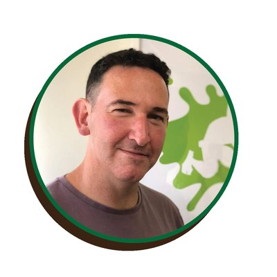
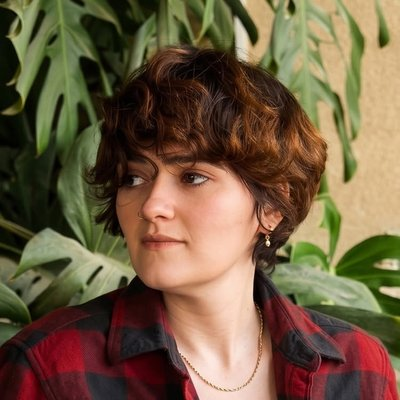

→ חזרה לכל השאלות
זה מתאים לי?
למי התוכנית הזו באמת מתאימה, ומה רמת הידע שנדרשת כדי להיכנס.
למי התוכנית מתאימה?⌄
למי שכבר עובד עם AI ורוצה לעבור משלב ה"משתמש/ת" לשלב ה"בונה".
שכירים, בעלי עסקים, עצמאיים ואנשי מקצוע שרוצים לבנות משרד AI שלם — צוות סוכנים שעובד בשבילם — ולא עוד טיפים לפרומפטים.
יש סינון בכניסה, כדי לוודא שכל מי שנכנס נמצא ברמה שמתאימה לקבוצה.
▸ הבוגרים מספרים
מה ההבדל בין טירונות סוכנים לקורס "לומדים AI"?⌄
בקורס "לומדים AI" למדתם להשתמש ב-AI: פרומפטים טובים יותר, תוצאות טובות יותר, עבודה חכמה יותר.
בטירונות סוכנים אתם כבר בונים : משרד AI שלם, צוות סוכנים שמחוברים לכלים שלכם, מכירים את העסק, ועובדים יחד גם כשאתם לא מול המסך.
בקיצור: שם הפכתם למשתמשים טובים. כאן אתם הופכים לבונים .
לא הפסקתי לבנות מאז שלמדתי את הקורס הראשון (לומדים AI) לא הפסקתי לבנות . ועכשיו, בטירונות סוכנים, אני קופצת לרמה חדשה ! ת תמר שילון בעלת מפעל למתוקים בריאים אני דוגמה חיה אני בטוחה שמישהו שיש לו את הרקע ומספיק בסיס, הוא יוכל לבוא ישר לטירונות. אבל הנה, אני דוגמה חיה לזה שהייתי בטוחה שיש לי רקע, ואת סיווגת אותי כאחת שצריכה את הבסיס הזה (הקורס המקדים), וזה עשה לי פלאים . אני לא יודעת איך הייתי מתמודדת בלי הבסיס. שחר דיק שיווק דיגיטלי וחדשנות הבנתי כמה אני לא מבינה גם אני צעירה, אני מהנדסת טכנולוגית. חשבתי שידעתי מה זה AI. הבנתי כמה אני לא מבינה בדיעבד, ועשיתי את הקורס המקדים, שהוביל אותי ככה ממש בצורה יפהפייה לטירונות. וזה פשוט היה הדבר הכי טוב שיכולתי לעשות עבורי . זה נתן לי את הבסיס האמיתי, דברים שלא חשבתי שאני לא מבינה. שחר דיק שיווק דיגיטלי וחדשנות
מה ההבדל בינכם לבין קורסים אחרים על קלוד?⌄
נתחיל דווקא מהחלק הלא נעים: יש קורסים זולים מאיתנו. הרבה יותר זולים. מי שמחפש את המחיר הנמוך ביותר ימצא אותו במקום אחר, וזו לא בושה.
אבל מה שמקבלים שם הוא בדרך כלל הכלי - איזה כפתור ללחוץ, איזו פקודה להקליד, איך לגרום למשהו לעבוד פעם אחת. מה שלא מקבלים שם הוא השיטה : איך לוקחים בעיה עסקית אמיתית ובונים לה פתרון שלם, שעובד גם מחר, שלא נשבר שבוע אחרי, וששורד גם כשהכלי עצמו משתנה.
וזו רק ההתחלה של ההבדל. מה שבאמת לא תמצאו בקורסים אחרים זו המעטפת שנבנתה כאן סביב חמשת המפגשים. היא לא קישוט - היא הלב של ההצלחה שלכם:
מתחילים לבנות עוד לפני המפגש הראשון. יש הכנה מסודרת עם סוכן שלוקח אתכם צעד-צעד, כך שביום הראשון אתם כבר לא יושבים בצד ומסתכלים - יש לכם סוכן משלכם.ליווי אנושי יד ביד. מתרגלים שעוזרים בזמן אמת בתוך הסשנים, ומפגש חידוד שבועי בזום שמגיעים אליו עם אתגר אמיתי ומקבלים הכוונה אישית.סוכנים שמלווים אתכם לאורך כל הדרך - לא רק בהתחלה. סוכנים שעוזרים ללמוד, לתרגל ולבנות.ספרייה שלמה שנשארת אצלכם: מאגר מדריכים, מילון מושגים, תרגולים מדויקים, ספריית ה-Skills של אִימפּרוּב מותקנת ועובדת, הקלטות ואתר חומרים - הכל ללא הגבלת זמן.מה שבניתם נשאר שלכם. הסוכן, ה-Skills והפלאגין - שלכם, גם אחרי שהקורס נגמר.תעודת הסמכה בפיתוח וניהול סוכני AI, עם מעל 40 שעות הכשרה. היא לא אוטומטית: היא ניתנת למי שיש לו תוצרים בפועל.קהילת בוגרים שממשיכה גם אחרי שהקורס נגמר.
זה מה שעולה כסף. וזה גם ההבדל בין לצאת עם עוד קורס שראיתם, לבין לצאת עם משרד שעובד. בוגרות שהגיעו לכאן אחרי קורסים אחרים אומרות את זה טוב ממני:
יוצא מוגבל בקורסים של מתחרים נותנים כבר סוכנים או כלים מוכנים, אבל לא מלמדים איך לעשות בעצמך - ובסוף אתה משלם הרבה כסף, אבל יוצא מוגבל . אצלך לומדים איך ליצור כל דבר שרוצים . אתה יוצא עם ידע שאפילו השמיים לא הגבול. אילנה וייס מטפלת בחרדות ומרצה מאוד business oriented חקרתי על קורסים, בעיקר על המקומות היותר קונבנציונליים [...] דברים מאוד בומבסטי וגדולים, אבל משהו לא התיישב לי שם. [...] שמה שלא התיישב לי בקורסים אחרים שבדקתי ומאוד התיישב לי פה, וזה מורגש גם עם המשתתפים האחרים. זה שזה מאוד business oriented . זה מאוד מיועד לאיך אני מביאה את ה-AI בתהליכים עסקיים ומייעלת אותם בתהליך העסקי שאני עובדת בו. [...] זה הבינגו שהייתי צריכה וזה גם לא נמרח חצי שנה. שחר דיק שיווק דיגיטלי וחדשנות כולם די מוכרים חלום דומה בשנה האחרונה ביליתי לא מעט בוובינארים ובכל מיני קורסים של דגש על קלוד. כולם די מוכרים חלום דומה , וחששתי שזה יהיה עוד איזשהו קורס שחצי מהזמן שלו יתמקד באיך בכלל להתקין את קלוד על המחשב, ואיך לחבר את זה לכל מיני קונקטורים כמו יומן, וכל הדברים שהם מאוד בייסיק. ואחד הדברים שמבדלים את שלהבת משאר הקורסים הוא שהיא עוזרת לבנות את הברזלים ואת היסודות של בניית סוכנים באמת עדי דותן שכירה בהייטק לא באמת ידעתי איך אני מייצרת סוכן לבד הקורסים שהתנסיתי בהם לא ענו על הצורך האמיתי, כי בסוף הקורס לא באמת ידעתי איך אני מייצרת סוכן לבד . הכול נראה וואו, איזה מדהים, ואז ברגע האמת, כשאני צריכה להתמודד עם זה, אני לא יודעת מה לעשות. ואחד הדברים שמבדלים את שלהבת משאר הקורסים הוא שהיא עוזרת לבנות את הברזלים ואת היסודות של בניית סוכנים. אחד הדברים שבעיניי סופר חשובים בבחירה של קורס הוא להבין שהמנטור שלך, או מי שמעביר את הקורס, למד את זה על הבשר שלו , על הכישלונות שלו, על הטעויות שלו. ואת זה שלהבת עשתה ביג טיים - כל מה שהיא מלמדת זה פרי עבודה שלה, התנסות שלה, טעויות שלה. עדי דותן שכירה בהייטק מרגישה בנוח עם Claude הייתי בקורסים אחרים, הגעתי, הקשבתי, אבל התשובות שקיבלתי, לא תשובות. ההדרכה הייתה "שלחנו לכם, תעתיקו, תדביקו". יצאתי מאוכזבת מאוד, ברמה שלא המשכתי אפילו להגיע ליתר המפגשים, כי הבנתי שחוץ מלבזבז את הכסף, אני אבזבז את הזמן. ובטירונות סוכנים, ומהרגע הראשון היה ברור שזה משהו אחר! [...] זה עולם אחר לגמרי. אני זוקפת את זה לחלוטין לזכותך, לזה שאני כרגע מרגישה בנוח עם Claude . ליטל יעקובוביץ דראי עו״ד ושופטת חסרה שם השיטה אני עד עכשיו הולכת לוובינרים של המתחרים שלך, פשוט להבין מה אחרים מוכרים ומה הם עושים. [...] ושוב, אני לא רוצה להגיד שום דבר שלילי על אף אחד, אבל אני מסתכלת, ואני רואה חסרה שם השיטה , כמו שהיא צריכה להיות בשביל שזה באמת יעבוד. [...] בזכות הקורס שלך, אני בניתי מלא דברים . ואז אני מבינה, אם לא הייתי עובדת לפי השיטה שלך, זה לא היה עובד לי ככה, כמו שזה עובד ומהר. אילנה וייס מטפלת בחרדות ומרצה ליצור כל דבר שרוצים אצלך לומדים איך ליצור כל דבר שרוצים . בקורסים של מתחרים נותנים כבר סוכנים או כלים מוכנים, אבל לא מלמדים איך לעשות בעצמך - ובסוף אתה משלם הרבה כסף אבל יוצא מוגבל. ואצל שלהבת אתה משלם פעם אחת, אפשר גם לפרוס לתשלומים - ואתה יוצא עם ידע שאפילו השמיים לא הגבול . אילנה וייס מטפלת בחרדות ומרצה מתודולוגיה סדורה מלווה בהסבר הפחד שלי היה שאלמד עוד שיטה בלי להבין את הלוגיקה שמאחוריה. עקבתי אחרי כמה מומחים שמכשירים בקורסים איך לבנות סוכנים, אבל אף אחד מהם לא יצר מתודולוגיה סדורה מלווה בהסבר מה קורה מאחורי הקלעים. [...] מה שהיה שונה אצל שלהבת - היא לא רק לימדה לבנות סוכן, היא בנתה תשתית שלמה שמכינה את הקרקע לפני שמתחילים. עדי דותן שכירה בהייטק אין מה להשוות את הקפיצה התלבטתי לגבי המחיר. בדיעבד הייתי אומרת לעצמי 'מה את, סתומה?'… לקחתי מלא קורסים בחיים, אין מה להשוות את הקפיצה . [...] בניתי עכשיו בימים האחרונים שני סוכנים . אחד זה אווה, שאחראית על הפיננסים שלי, של העסק, ואחד זה צביקה, שהוא מנהל התוכן והשיווק שלי. מורן טאובר מטפלת ברפואה סינית ועו״ד בעברה ידעתי איך לבנות עוזר אישי נחמד לפני שהתחלתי את הקורס הייתי בטוחה שאני יודעת לבנות סוכנים לבד. כבר בניתי עוזרים אישיים והם עבדו לי נהדר על משימות קטנות. אבל ברגע שרציתי לעשות מזה משהו מורכב, כאן הייתה הבעיה. בקורס גיליתי שבעצם לא ידעתי איך לבנות סוכנים עד עכשיו, ידעתי איך לבנות עוזר אישי נחמד . זה לא באמת סוכן שיכול לעשות בשבילך את הפעולות מקצה לקצה. [...] היום אני יודעת לבנות סוכנים שבאמת יודעים לקחת פעולה מקצה לקצה ולבצע אותה בשבילי בצורה מושלמת. למדתי בקורס איך לשכפל את המוח שלי . ירדן מנשרי סיני ד"ר לחקר המוח, יזמת לא יכלתי דברים שניסיתי לפני שהגעתי [...] היו כל מיני קורסים קטנים, קצרים. קצת ללמוד על GPT, קצת ללמוד על כל מיני כלים של עריכות וידאו, תמונות. [...] אבל אם הייתי צריכה להגדיל את הסקופ של מה שאני עושה לתחום אחר, לא יכלתי . והיום, אין משהו שאני לא אצליח לבנות . כל עוזר שאני יכולה לחשוב עליו, כל דבר קטן, בין בחיים הפרטיים ובין בחיים העסקיים שלי, אני יכולה לייעל.רננה צברי משווקת קורסים לרופאי שיניים התוצאה חייבת להיות אישית מה שיפה בקורס של אימפרוב זה שאת מתייחסת המון ללהכניס ידע מתוך העסק האישי שלי, מתוך ההקשרים, הרפרנסים שלי, דברים שאני משתמש בהם ביום-יום. אתה מכניס את הידע הזה לתוך המערכת, וזה הבסיס של הבסיס של הבסיס. הקורס חייב להיות אישי, התוצאה חייבת להיות אישית , כי היא מבוססת על ידע אישי שלי. יעקב מיוחס עורך דין שאני אהיה עצמאית ברצונות שלי ובחזון שלי הרגשתי שאף אחד לא באמת נותן לי עצמאות בבנייה של סוכנים. להפך, הרגשתי איזושהי סוג של תלות, בהורדת סקילים והעתקה של פרומפטים. כל מה שלי היה חשוב זה שאני אהיה עצמאית ברצונות שלי ובחזון שלי , וזה משהו שהרגשתי שחסר לי. ואני מוכרחת להגיד. שלהבת קודם כול סיפקה לי בצ'קליסט שלי בדיוק את כל מה שציפיתי ודרשתי מבחינת התוצרים של הקורס. מהבחינה הזאת זה מעל הציפיות שלי, ממש. [...] ברגע שקיבלתי את השליטה על הידיים שלי, [...] הצלחתי לייצר עצמאות הלכה למעשה , אני מרגישה ששום דבר לא יכול לנצח אותי. עדי דותן שכירה בהייטק עשיתי הרבה שופינג אחרי הקורס הזה, מבחינתי השגתי את כל המטרות שהגדרתי לעצמי, ועשיתי הרבה שופינג , אני מוכרחת להגיד. שלהבת קודם כול סיפקה לי בצ'קליסט שלי בדיוק את כל מה שציפיתי ודרשתי מבחינת התוצרים של הקורס. מהבחינה הזאת זה מעל הציפיות שלי, ממש. [...] אני יודעת היום להתמודד עם קלוד. הגעתי לבעיות טכניות מטורפות, והצלחתי לפתור אותן , ואני מרגישה שזהו, [...] קיבלתי את הרישיון לנהיגה. עדי דותן שכירה בהייטק בפועל לא קיבלתי את ההבטחות שהבטיחו למרות שהייתי בקורסים שגם עלו אלפים כל אחד, לא היה לי שום דבר ממה שיש לי היום. תמיד יש הבטחות מאוד גדולות בקורסים... ולמדתי, ובפועל לא קיבלתי את ההבטחות שהבטיחו , ויצאתי בלי יכולת באמת לעשות דברים שרציתי לעשות. [...] והיום אני יכולה להגיד חד משמעית שהסוכנים שבניתי כבר עושים את העבודה שהרבה מהעובדים האמיתיים שלי עשו. אילנה וייס מטפלת בחרדות ומרצה ראיתי בזכות הקורס שלך, אני בניתי מלא דברים. ואז אני מבינה, אם לא הייתי עובדת לפי השיטה שלך, זה לא היה עובד לי ככה, כמו שזה עובד ומהר. וגם אחרי זה המשכתי ללכת לעוד [...] של קורסים נוספים. ואני פשוט ראיתי שאין, אין כלום, שוב בעיניי, לא משתווה לשיטה שלך איך שאת בנית את זה. וזה עושה הבדל מאוד מאוד משמעותי. [...] והיום אני יכולה להגיד חד משמעית שהסוכנים שבניתי, שכבר בניתי, [...] הם כבר עושים את העבודה שהרבה מהעובדים האמיתיים שלי עשו. אילנה וייס מטפלת בחרדות ומרצה היה ברור שזה משהו אחר אחרי התנסות לא מוצלחת בקורס אחר ללימוד קלוד נרשמתי מיד לקורס טירונות סוכנים, ומהרגע הראשון היה ברור שזה משהו אחר ! [...] ממי שלא נגעה כמעט בקלוד יצרתי לי כל כך הרבה סוכנים שהמטרה שלהם להקל עליי [...] בעבודה שלי וגם מחוץ לעבודה. ליטל יעקובוביץ דראי עו״ד ושופטת אין מה להשוות לקחתי מלא קורסים בחיים שלי. אין מה להשוות את הרמה ואת הקפיצה. [...] בניתי עכשיו בימים האחרונים שני סוכנים . אחד זה אווה, שאחראית על הפיננסים שלי, של העסק, ואחד זה צביקה, שהוא מנהל התוכן והשיווק שלי. מורן טאובר מטפלת ברפואה סינית ועו״ד בעברה כאן זה עולם אחר לגמרי נרשמתי לקורסים אחרים של Claude Code והתאכזבתי… כאן זה עולם אחר לגמרי . ליטל יעקובוביץ דראי עו״ד ושופטת דיברת ספציפי מאוד - על סוכנים בזמן שהמתחרים שלך מדברים רק על מה שהם מוכרים בצורה שיווקית מדי ומפונפנת, את היית הראשונה שדיברת ספציפי מאוד - על סוכנים . ועשית את זה ממש ממש מעניין. [...] אני עדיין בשוק מההבנה שקלוד פשוט עושה את מה ששילמתי למזכירות שלי עשרות אלפי שקלים בחודש (כל מני פעולות ומשימות). אילנה וייס מטפלת בחרדות ומרצה ▸ הבוגרים מספרים
אני לא טכני/ת. זה בשבילי?⌄
כן. התוכנית נבנתה בדיוק לאנשים כאלה.
היא לא מיועדת למפתחים בלבד , אלא לאנשים שרוצים לבנות בלי לדעת קוד.
אנחנו עובדים בגישת Vibe Coding: אתם מתארים מה אתם רוצים, ו-Claude בונה איתכם. בנוסף, מתרגלים עוזרים בזמן אמת לאורך הסשנים.
הסוכן הראשון פשוט עבד תמיד חשבתי מבחוץ שבניית סוכנים דורשת רקע טכני כבד. ברגע שהבנתי איך לחבר את החלקים, והסוכן הראשון פשוט עבד - תפיסת העבודה שלי השתנתה לחלוטין . טל מגנזי סוכנת ביטוח לא חייב להיות עם אוריינטציה טכנית אני חושבת שאתה לא חייב להיות עם אוריינטציה טכנית , ממש לא. [...] אני יודעת היום להתמודד עם קלוד. הגעתי לבעיות טכניות מטורפות, והצלחתי לפתור אותן , ואני מרגישה שקיבלתי את הרישיון לנהיגה. עדי דותן שכירה בהייטק ▸ הבוגרים מספרים
צריך לדעת קוד?⌄
לא. בכלל.
לא צריך לדעת לכתוב קוד כדי להשתתף ולבנות סוכנים, כלים ופלאגינים.
אם תרצו להבין בהמשך מה קורה מאחורי הקלעים — מצוין, יש לזה מקום. אבל זו לא דרישת כניסה.
הסוכן הראשון פשוט עבד תמיד חשבתי מבחוץ שבניית סוכנים דרשה רקע טכני כבד. ברגע שהבנתי איך לחבר את החלקים והסוכן הראשון פשוט עבד , תפיסת העבודה שלי השתנתה לחלוטין. טל מגנזי סוכנת ביטוח לא צריכה ללמוד שורת קוד אחת הדבר היחידי שקצת חששתי ממנו היה הטכני, אבל ברגע שדיברתי איתך אמרת לי שאני לא צריכה שום ידע טכני. אני חוקרת ביחד עם קלוד דברים, ואני מבינה שאני לא צריכה ללמוד שורת קוד אחת . אני כן צריכה לעשות לו אימות, שמה שהוא עושה נכון ושהוא לא מחרטט, אבל גם על זה למדתי איך לעשות נכון. רננה צברי משווקת קורסים לרופאי שיניים חשבתי שקלוד זה לאלה שמתכנתים פעם זה היה נשמע לי כמו סינית, כאילו הגעתי לשיעור מדעי המחשב, וזה לא אני. אבל זה פחות מאיים ממה שזה היה, ובאמת חשבתי שקלוד זה לאלה שמתכנתים . [...] זה הרבה יותר friendly ממה שתיארתי. [...] אני לא צריכה יותר שאף אחד יכתוב לי כתבי טענות. אני לא צריכה את אף אחד שיכין לי דברים. מלא דברים אני לא צריכה יותר לחפש במקומות אחרים, כי אני מצליחה לעשות אותם לבד . ליטל יעקובוביץ דראי עו״ד ושופטת לאנשים שלא כותבים קוד את אחת החכמות שהכרתי. אין לי מושג איך הצלחת לקחת עולם כל כך מורכב ולהנגיש אותו לאנשים שלא כותבים קוד . בת חן לוי סמנכ"לית פיתוח עסקי גיט או טרמינל או פקודות ממי שלא נגעה כמעט בקלוד, יצרתי לי כל כך הרבה סוכנים שהמטרה שלהם להקל עליי לקצר תהליכים בעבודה שלי וגם מחוץ לעבודה. התגברתי על כל כך הרבה חסמים שהיו לי כמי שלא עסקה מעולם בתכנות, ומילים כמו גיט או טרמינל או פקודות היו זרות לי. ליטל יעקובוביץ דראי עו״ד ושופטת אני כן יודעת לעשות חשבתי שאני לא טכנולוגית. אבל כבר בשיעור השני קלטתי שאני כן טכנולוגית. אני כן יודעת לעשות , זו סתם פוביה שהייתה לי לפני זה. בת חן לוי סמנכ"לית פיתוח עסקי הרבה יותר קל ממה שזה נראה AI מיועד בדיוק למי שלא עוסק בתכנות בשגרה. הוא פשוט מנגיש עבורנו את העולם הזה, וזה הרבה יותר קל ממה שזה נראה . רובנו יודעים מאוד טוב מה אנחנו עושים ומה אנחנו חולמים שיהיה לנו כדי להקל עלינו בעבודה. סיגל יער עורכת דין, בת 58 זה פיצץ לי את המוח היכולת עכשיו לבנות דף נחיתה או אתר ככה ב-Claude קוד - זה פיצץ לי את המוח . זה ליטרלי פשוט להגיד לו 'תעשה ככה, תעשה ככה' ולא לעשות כלום בעצמי, והתוצאה יוצאת כל כך כל כך יפה . ההלם מזה שאני יודעת מה כמות הזמן והאנרגיה שזה היה לוקח לי לעשות את זה בעצמי. אילנה וייס מטפלת בחרדות ומרצה אשב עד לפני 3 חודשים לא היה לי ChatGPT בטלפון. היום, אין מצב שאני אשב עם מישהו טכני ולא מבינה מה הוא מדבר איתי. אין סיכוי. 90% מהשיחה אני מבינה . לא חשבתי שאני מסוגלת להבין את כל המונחים הקטנים האלה. בגלל שבאתי ללמוד שיטה, אני נמצאת במקום אחר לגמרי. 80% ממה שיושב לי בראש אני כן יודעת לבנות. בת חן לוי סמנכ"לית פיתוח עסקי לא טכנולוג, לא מתכנת, אבל כן רוצה שליטה התוכנית הזו הייתה דרך להיכנס לתחום - למישהו דווקא לא טכנולוג, לא מתכנת, אבל כן רוצה שליטה על העסק, באמת הטכני. סיגל יער עורכת דין, בת 58 לא צריכה להיות מתכנתת אני לא צריכה להיות מתכנתת בשביל זה, אני רק צריכה לדעת לנהל נכון. אילנה וייס מטפלת בחרדות ומרצה מיועד בדיוק למי שלא עוסק בתכנות ההבנה שלי היא ש-AI מיועד בדיוק למי שלא עוסק בתכנות בשגרה, הוא פשוט מנגיש עבורנו את העולם הזה וזה הרבה יותר קל ממה שזה נראה. סיגל יער עורכת דין, בת 58 פחות מפחיד, הריבוע השחור יצרתי היום בשביל הכיף סוכן פיננסי שקרא וניתח דפי אשראי וחשבונות בנק. זה נראה כבר פחות מפחיד, הריבוע השחור . (הטרמינל של המחשב) ליטל יעקובוביץ דראי עו״ד ושופטת לא לפחד מהטכני הבנתי שיש לי את הקצב שלי, ולקח לי קצת זמן לקלוט את זה, אבל זה הגיע. והכי חשוב - לא לפחד מהטכני . בניתי סוכנת שעוזרת לי להתנהל עם מטא, למצוא באגים ולתפעל את המערכת, וגם סוכנת שבונה לי תקציבים לפי נתונים שאני מביאה לה. רננה צברי משווקת קורסים לרופאי שיניים לא חייב להיות עם אוריינטציה טכנית אני חושבת שאתה לא חייב להיות עם אוריינטציה טכנית , ממש לא. [...] אני יודעת היום להתמודד עם קלוד. הגעתי לבעיות טכניות מטורפות, והצלחתי לפתור אותן , ואני מרגישה שקיבלתי את הרישיון לנהיגה. עדי דותן שכירה בהייטק ▸ הבוגרים מספרים
אני כבר מתקדם/ת — זה לא בסיסי מדי?⌄
בואו נבדוק — וזו לא רק שאלה של "מכירים את הכלים":
שולטים בכל האקוסיסטם (Projects, Cowork, Claude Code, Skills, MCP, פלאגינים)? יודעים לבנות לא רק סוכן בודד — אלא צוות סוכנים שעובדים אחד עם השני , משרד שלם? יודעים לבנות מערכות שלא נשברות , ולנטר אותן לאורך זמן?
אם כן לכל אלה — כנראה שהתוכנית פחות תחדש לכם. אם לא — כאן בדיוק הפער שהיא סוגרת.
כולם די מוכרים חלום דומה בשנה האחרונה ביליתי לא מעט בוובינארים ובכל מיני קורסים של דגש על קלוד. כולם די מוכרים חלום דומה , וחששתי שזה יהיה עוד איזשהו קורס שחצי מהזמן שלו יתמקד באיך בכלל להתקין את קלוד על המחשב, ואיך לחבר את זה לכל מיני קונקטורים כמו יומן, וכל הדברים שהם מאוד בייסיק. ואחד הדברים שמבדלים את שלהבת משאר הקורסים הוא שהיא עוזרת לבנות את הברזלים ואת היסודות של בניית סוכנים באמת עדי דותן שכירה בהייטק יש לנו blind spots גם בתור מתכנת היה לי טוב לבוא לקורס כזה. יש לי תואר שני, יצא לי ללמוד AI ו-Machine Learning. דווקא כשאנחנו יודעים דברים ובאים ללמוד אותם, יש לנו blind spots , חורים שחורים כאלה שאנחנו לא יודעים, ואלה הדברים שיכולים לקדם אותנו הכי הרבה. 
שפי גור-אריה מתכנת ומרצה בנוחות ובמהירות כבר מההכנה לשיעור הראשון מתחילים לבנות סוכנים ותהליכים בנוחות ובמהירות , השיעורי הכנה והשיעורי בית לאחר מכן מכניסים ישר למים עמוקים. בתור אחת שהעידה על עצמה שהיא ברמה גבוהה, למדתי עוד מלא והרמה עלתה משמעותית. ש שני חיימי אשת שיווק דיגיטלי יש יותר סדר לי הקורס מאוד עזר להבין יותר. גם אני עבדתי עם קלוד קודם, אבל עכשיו יש יותר סדר ואני יודעת להשתמש - לשאול את קלוד, להבין כמה הדאטה חשוב, וככה להתקדם. זה המון עבודה ויש הרבה משימות, ותוך כדי אתה לומד ומשדרג את עצמך עם הקלוד. ענת מנור סמנכ"לית פיתוח עסקי ושיווק הם עושים 70% מהעבודה פיתחתי סוכנים: יש לי סוכנת שהיא עוזרת האישית שלי, יש סוכן פדגוגי שעוזר לי בהכנת החומרים. הם עושים 70% מהעבודה . וכל יום נוסף שאני עובדת איתם ומלמדת אותם, הזיכרון והידע נשמרים לי בצורה מתודולוגית - אז זה משתפר. חני הופמן מדריכת AI לשמאי מקרקעין לי זה שינה את הכל בעסק קורס חובה! למי שרוצה לקפוץ רמה בידע בכלים שמקבלים על מנת לנהל את העסק ברמה הרבה יותר גבוהה. הכלים ששלהבת נותנת בקורס שווים המון! לי זה שינה את הכל בעסק . רון אלון יזם ומפתח אפליקציות עשה לי כל כך הרבה סדר בתור בן אדם שכל החיים שלו התעסק עם טכנולוגיה ומאוד אוהב אותה, לא הבנתי את הפער הזה: למה יש לי פער ממה שאני שומע למה שאני מסוגל לעשות. [...] אחד הדברים הכי משמעותיים שעשיתי זה סוכן שמדבר איתי ובונה את ה-GDD (מסמך עיצוב למשחק). וזה עשה לי כל כך הרבה סדר , כי הייתי באמצע גרסאות ושינויי רעיונות. שפי גור-אריה מתכנת ומרצה ידעתי איך לבנות עוזר אישי נחמד לפני שהתחלתי את הקורס הייתי בטוחה שאני יודעת לבנות סוכנים לבד. כבר בניתי עוזרים אישיים והם עבדו לי נהדר על משימות קטנות. אבל ברגע שרציתי לעשות מזה משהו מורכב, כאן הייתה הבעיה. בקורס גיליתי שבעצם לא ידעתי איך לבנות סוכנים עד עכשיו, ידעתי איך לבנות עוזר אישי נחמד . זה לא באמת סוכן שיכול לעשות בשבילך את הפעולות מקצה לקצה. [...] היום אני יודעת לבנות סוכנים שבאמת יודעים לקחת פעולה מקצה לקצה ולבצע אותה בשבילי בצורה מושלמת. למדתי בקורס איך לשכפל את המוח שלי . ירדן מנשרי סיני ד"ר לחקר המוח, יזמת סידר לי את הכל היה לי ידע לפני - אני כבר כמעט שנתיים בתחום. אבל, וזה אבל גדול: הידע שהיה לי היה מפוזר, בלאגן בראש. שלהבת בקורס נותנת לכם כלים לעשות סדר, להבין איך דברים עובדים נכון ואיך צריך לבנות. זה פשוט סידר לי את הכל אחרי הקורס, חיבר לי קצוות. רון אלון יזם ומפתח אפליקציות חששתי שאני כבר יודעת הכל חששתי שאני כבר יודעת הכל או מספיק, כי כל העסק שלי מנוהל בכלי AI שבניתי. אבל שלהבת היא מאגר ידע ופתרונות כמו שלא פגשתי עוד - השראה שגורמת לי להשתפר, לשפר את הכלים ולמקסם את התוצאות בעסק.[...] לדוגמה הסוכנת גפן, שעוזרת לי לייצר תוכן , לכתוב מגנטי לידים, רילס, סטורי ערך סטורי אישי, חיבור למאניצאט יצירת מתנות בחינת הצלחה של תוכן ולולאת למידה. ת תמר שילון בעלת מפעל למתוקים בריאים הערך המוסף להקפיץ אותי למדרגה למעלה אני מכירה את הכלים ועובדת באופן מאוד אינטנסיבי עם כלי ה-AI. ברור לי לגמרי שיש לי גם מה ללמוד, ובאתי ללמוד ממישהי שיש לה את הערך המוסף להקפיץ אותי למדרגה למעלה . חני הופמן מדריכת AI לשמאי מקרקעין רצון ללמוד להתפתח להתקדם - תבואו אם אתם מרוצים לגמרי מהמקום שלכם כרגע - אל תבואו, תמשיכו ככה. אם יש לכם משהו שאתם רוצים לשפר, זמן שאתם רוצים לחסוך, כסף שאתם רוצים לחסוך או לייצר יותר ממנו, רצון ללמוד להתפתח להתקדם - תבואו . ירדן מנשרי סיני ד"ר לחקר המוח, יזמת הבנתי כמה אני לא מבינה גם אני צעירה, אני מהנדסת טכנולוגית. חשבתי שידעתי מה זה AI. הבנתי כמה אני לא מבינה בדיעבד, ועשיתי את הקורס המקדים, שהוביל אותי ככה ממש בצורה יפהפייה לטירונות. וזה פשוט היה הדבר הכי טוב שיכולתי לעשות עבורי . זה נתן לי את הבסיס האמיתי, דברים שלא חשבתי שאני לא מבינה. שחר דיק שיווק דיגיטלי וחדשנות ▸ הבוגרים מספרים
אני לא בטוח/ה שיש לי מספיק רקע — זה באמת בשבילי?⌄
התחושה הזאת ("אולי אני לא מספיק…") מופיעה דווקא אצל אנשים מוכשרים. הדרישה היא לא רקע טכני — אלא שאתם כבר עובדים עם AI ומסתדרים טוב עם מחשב.
אם זה אתם, יש לכם בדיוק את הבסיס. הסינון בכניסה נועד לוודא שתהיו במקום הנכון — אז אם עברתם את הסינון בכניסה, אתם מתאימים.
הבנתי שאפשר לעשות את זה הלכתי לאיבוד בשבועיים הראשונים של הקורס. אבל ישבתי והשקעתי, והבנתי שאפשר לעשות את זה . וברגע שתופסים את זה - זה עולם חדש ומרגש ! רננה צברי משווקת קורסים לרופאי שיניים הסוכן הראשון פשוט עבד תמיד חשבתי מבחוץ שבניית סוכנים דרשה רקע טכני כבד. ברגע שהבנתי איך לחבר את החלקים והסוכן הראשון פשוט עבד , תפיסת העבודה שלי השתנתה לחלוטין. טל מגנזי סוכנת ביטוח גיט או טרמינל או פקודות ממי שלא נגעה כמעט בקלוד, יצרתי לי כל כך הרבה סוכנים שהמטרה שלהם להקל עליי לקצר תהליכים בעבודה שלי וגם מחוץ לעבודה. התגברתי על כל כך הרבה חסמים שהיו לי כמי שלא עסקה מעולם בתכנות, ומילים כמו גיט או טרמינל או פקודות היו זרות לי. ליטל יעקובוביץ דראי עו״ד ושופטת שלא האמנתי שאני אצליח ליצור שיעורי הבית של הלפני (ההכנה לפני הקורס) היו כיפיים. זה היה שואב וזה היה המון מלמד, ומבחינתי זה באמת היה מרתק. פתאום שכחתי שאני יושבת מול המחשב. זה ממש היה כמו לדבר עם, כמו שאת אומרת, סוכן שותף, מישהו שלומד להכיר אותי ויצר איתי משהו שלא האמנתי שאני אצליח ליצור . עוד לפני השיעור הראשון. ליטל יעקובוביץ דראי עו״ד ושופטת לא לפחד מהטכני הבנתי שיש לי את הקצב שלי, ולקח לי קצת זמן לקלוט את זה, אבל זה הגיע. והכי חשוב - לא לפחד מהטכני . בניתי סוכנת שעוזרת לי להתנהל עם מטא, למצוא באגים ולתפעל את המערכת, וגם סוכנת שבונה לי תקציבים לפי נתונים שאני מביאה לה. רננה צברי משווקת קורסים לרופאי שיניים הרבה יותר קל להשלים את זה אני אשת מקצוע, אני מבינה בקמעונאות, ביבוא, בסיטונאות, בביזנס. הייתי צריכה לעשות את ההשלמה הטכנית, להבין איך אני יכולה לעשות את זה בתוך ה-AI. הרבה יותר קל להשלים את זה , מאשר שארגון ייקח מישהו חיצוני לגמרי שלא מבין כלום בביזנס.בת חן לוי סמנכ"לית פיתוח עסקי ולא ויתרת לי לא ממש הבנתי לאן נכנסתי כשהתחלתי את הקורס. בקבוצה מאות שאלות, ואצלי צרצרים, שקט, דממה. פשוט סינית. היה גם משבר - התייאשתי, התלוננתי, ואת מיד עמדת לצידי, מיד התקשרת בשעת ערב מאוחרת, הזרקת לי מרץ ואנרגיות חיוביות ולא ויתרת לי . ואז הקסם קרה: הבנתי מה שכתבו בקבוצה , הבנתי את המושגים והשאלות. ה הדס לנר יועצת כלכלית רק צריכה לחלום על משהו אני מרגישה היום שיש לי את הידע ואת ההבנה, ואני רק צריכה לחלום על משהו … ולבצע את זה. חני הופמן מדריכת AI לשמאי מקרקעין אשב עד לפני 3 חודשים לא היה לי ChatGPT בטלפון. היום, אין מצב שאני אשב עם מישהו טכני ולא מבינה מה הוא מדבר איתי. אין סיכוי. 90% מהשיחה אני מבינה . לא חשבתי שאני מסוגלת להבין את כל המונחים הקטנים האלה. בגלל שבאתי ללמוד שיטה, אני נמצאת במקום אחר לגמרי. 80% ממה שיושב לי בראש אני כן יודעת לבנות. בת חן לוי סמנכ"לית פיתוח עסקי אני כן יודעת לעשות חשבתי שאני לא טכנולוגית. אבל כבר בשיעור השני קלטתי שאני כן טכנולוגית. אני כן יודעת לעשות , זו סתם פוביה שהייתה לי לפני זה. בת חן לוי סמנכ"לית פיתוח עסקי תראו מה בניתי בזכות הקורס אני בקבוצה הlate bloomer (שפורחים מאוחר), אבל תראו מה בניתי בזכות הקורס . אתר שלם שנבנה ב-WordPress, כולל חיבור למערכת CRM ואופטימיזציה ל-SEO. וזו עוד לא הגרסה הסופית. ר רוני ירושלמי מרצה לקרימינולוגיה הרבה יותר קל ממה שזה נראה AI מיועד בדיוק למי שלא עוסק בתכנות בשגרה. הוא פשוט מנגיש עבורנו את העולם הזה, וזה הרבה יותר קל ממה שזה נראה . רובנו יודעים מאוד טוב מה אנחנו עושים ומה אנחנו חולמים שיהיה לנו כדי להקל עלינו בעבודה. סיגל יער עורכת דין, בת 58 ממש ממש ממש לא אחרי יש הרבה מאוד רתיעה, אני פוגשת את זה הרבה אצל חברות בגילאים שלנו: עולם ה-AI זה פחות לגיל שלנו, אנחנו כבר אחרי. אז לא, אנחנו ממש ממש ממש לא אחרי . אין מה לחשוש, זה כל כך פשוט, צריך רק לעשות את הצעד הראשון ולהירשם. [...] אחרי שבועיים הרגשתי קפיצה מטורפת. באתי ואמרתי: וואו, אני יכולה לבנות עכשיו כל דבר . סיגל יער עורכת דין, בת 58 ▸ הבוגרים מספרים
אין לי רעיון ספציפי לבנות עליו — זה עדיין בשבילי?⌄
כן — וזו בדיוק אחת ההפתעות. בקורס אתם בונים הרבה מאוד דברים , לא דבר אחד.
מניסיון: גם מי שהגיע בלי רעיון יצא עם יותר מדי. הרעיונות מגיעים מכמה כיוונים — מאיתנו, מהקבוצה (שמפרה רעיונות אחד לשני), ובעיקר מהיום-יום שלכם: ברגע שאתם יודעים לבנות, פתאום רואים use case בכל פינה.
אז לא, לא צריך להגיע עם רעיון — צריך להגיע עם נכונות לבנות.
▸ הבוגרים מספרים
אני מתחום מאוד ספציפי — זה רלוונטי גם לי?⌄
בדיוק בגלל זה זה מתאים לכם. השיטה לא גנרית — כל משתתף בונה על הבעיה שלו . ה-use case שלכם הוא הפרויקט.
בקורס בנו אנשים ממשפט, חינוך, רפואה, חשבות שכר ומסחר — כל אחד סוכן שמתאים בדיוק לעולם שלו.
בתוך דקות בניתי את רז, סוכן שמנתח ומסכם עבורנו מכרזים בתוך דקות . עבודה שבעבר דרשה שעות של קריאה, ניתוח והכנת סיכומים, ובוצעה אצלנו על ידי מזכירה שהוכשרה במיוחד לכך. היום הסוכן רז עושה את העבודה, וחוסך לנו בפועל כחצי משרה . ענת מנור סמנכ"לית פיתוח עסקי ושיווק לא יכלתי דברים שניסיתי לפני שהגעתי [...] היו כל מיני קורסים קטנים, קצרים. קצת ללמוד על GPT, קצת ללמוד על כל מיני כלים של עריכות וידאו, תמונות. [...] אבל אם הייתי צריכה להגדיל את הסקופ של מה שאני עושה לתחום אחר, לא יכלתי . והיום, אין משהו שאני לא אצליח לבנות . כל עוזר שאני יכולה לחשוב עליו, כל דבר קטן, בין בחיים הפרטיים ובין בחיים העסקיים שלי, אני יכולה לייעל.רננה צברי משווקת קורסים לרופאי שיניים אלא אני בונה את עצמי ההשקעה בבינה מלאכותית בצורה נכונה היא השקעה שבסופו של דבר אומרת: אני בונה את עצמי. אני לא בונה כלי בהכרח, או סוכן כזה או אחר, אלא אני בונה את עצמי . כשאני בונה את עצמי בצורה טובה, כל סוכן שאני ארצה, אני פשוט אדע לעשות אותו. יעקב מיוחס עורך דין אין דבר שאי אפשר קודם כל, ברמה מחשבתית - תודעה: לפתוח את הראש. הכל אפשרי. להגיד לעצמך: אין דבר שאי אפשר . דולב דרי בעל סוכנות פרסום להרגשה של יכול לעשות הכל המעבר מבלבול גדול, להרגשה של יכול לעשות הכל . שפי גור-אריה מתכנת ומרצה חיסכון מטורף בזמן ובכסף למי שמתלבטת או מתלבט, אני חושבת שהתשובה היא חד משמעית לא להתלבט. זה שווה את זה. [...] את מעבירה את התוכן ואת הידע שיש לך, המטורף, בראש בצורה שלאנשים קל ליישם ולהבין ולהפנים, מה שלא קרה לי במקומות אחרים. [...] המאמץ גם לפני הקורס וגם תוך כדי הקורס הוא בעיניי כיפי מאוד. התוצרים שנוצרים הם מטורפים, היכולת משתדרגת וזה חיסכון מטורף בזמן ובכסף ובמלא דברים אחרים. ליטל יעקובוביץ דראי עו״ד ושופטת שיטה מסודרת לעבודה השמיים הם הגבול! הכל אפשרי. בזכות זה שיש שיטה מסודרת לעבודה , יש ביטחון, יש צבירת נכסים ולא דברים שהולכים לאיבוד. יש שליטה ובקרה בכל מה שאתה עושה. ירון בוסקילה מהנדס תוכנה עריכת הבעיה בשוק שלי של עולם עריכת הדין זה שאנחנו מוגבלים בכללי אתיקה. ועלה לי חשש כמו להרבה מהחברים שלי שאולי קורס כזה או אחר של בינה מלאכותית או שימוש בכלי של בינה מלאכותית לא מתאים לנו וזה לא נכון, ממש ממש ממש לא נכון . [...] כיום המערכים שלי מבחינת סוכנים הפכו להיות אדירים ומאפשרים לי ליצור כתבי טענות מיוחדים , טיעונים חזקים ועוצמתיים. יעקב מיוחס עורך דין תמנון הפריצת הדרך הגדולה שלי היא הייתה בעצם הבנה של כל המערכת הזאת, כמה שהיא כמו תמנון רב זרועות, שהוא הליבה שלו זה ה-Claude Code, אבל החיבוריות שלו לכל מערכת בעולם, עם MCPs ו-APIs, היא פשוט יכולה, היא תיתן לנו את האפשרות ליצור כל מה שאנחנו רוצים . חני הופמן מדריכת AI לשמאי מקרקעין כל אחד ואחד הצליח למצוא בדיוק את מה שהוא רצה היה מגוון כל כך רחב של אנשים בתחומים שונים, וכל אחד ואחד הצליח למצוא בדיוק את מה שהוא רצה . המרבית המוחלטת של האנשים הרגישו את אותה קפיצה. וגם מי שהרגיש קצת מאחור, גילה שהוא בעצם לא מאחור בכלל - שזו הייתה רק תחושה שלו, ובפועל הוא הצליח לבנות הרבה דברים שהוא לא חשב שיוכל לבנות רגע לפני שהתחיל את הקורס. [...] בניתי כבר הרבה מאוד דברים. [...] הדבר הבסיסי שבניתי זה מישהו שיעשה לי, כשאני מקבלת מאות עמודים של מסמכים רפואיים, [...] בניתי סוכן שעושה לי את זה עכשיו, וזה עובד יפה. סיגל יער עורכת דין, בת 58 יש לי סוכנים שעושים את זה כל דבר שאפשר לעשות בעולם השיווק הדיגיטלי, פרסום - עשיתי את זה. יש לי סוכנים שעושים את זה . דולב דרי בעל סוכנות פרסום משרה שלמה של אנליסט בכיר יש לי סוכן שמנתח לי דוחות רווחיות מה-ERP - מוצא בעצמו טעויות וחוסך לי משרה שלמה של אנליסט בכיר , 30,000+ בחודש. בת חן לוי סמנכ"לית פיתוח עסקי ההבנה איך לעבוד נכון בניתי משרד AI שלם של יותר מ-20 עובדים - שילוב של 2 מערכות יחד, קודקס וקלוד, שעושים עבודה וחוסכים לי כסף כל רגע! פיתוח אפליקציה שהשבוע עלתה לחנות של אפל - באופן רשמי. וכל זה בגלל הקורס וההבנה איך לעבוד נכון , לשפר ולקדם דברים בצורה הכי טובה! רון אלון יזם ומפתח אפליקציות רק מהשלושה שיעורים הראשונים רק מהשלושה שיעורים הראשונים בלבד בניתי שתי סוכנים שמנהלים את כל ההתעסקות שלי ופתיחת עסק עצמאי בסין, כולל ויזות וירידה לפרטים הקטנים - הכול מהידע של הקורס!ט טל בירמן מנהל רכש ותצוגה בדיוטי מוטי לערער על תביעות שחברת הביטוח דוחה בניתי סוכן שיודע לערער על תביעות שחברת הביטוח דוחה , והוא גם יודע לומר לעובדות שלי אם יש כיסוי לתביעה לפני ההגשה שלה בפועל. טל מגנזי סוכנת ביטוח בצ'אט בעזרת שלהבת והידע המדהים שלה הצלחתי לבנות את גרייס, זו מערכת שמתחילה בצ'אט עם המשתמש ובסופו של דבר מבצעת עדכונים במערכת מידע אמיתית , היא מבינה את המשתמש מתרגמת את הרצון שלו לפעולות חוקיות ומבצעת בהצלחה את כל הבקשה. ירון בוסקילה מהנדס תוכנה במקום שונה לחלוטין כיום המערכים שלי מבחינת סוכנים הפכו להיות אדירים, ומאפשרים לי ליצור כתבי טענות מיוחדים, טיעונים חזקים ועוצמתיים, ובניית אסטרטגיה וטקטיקה שמציבות אותי במקום שונה לחלוטין מהאופן שבו נמצאים שאר הקולגות שלי. יעקב מיוחס עורך דין עשרות סוכנים לעבודה שלי המשפטית יצרתי עשרות סוכנים לעבודה שלי המשפטית , כולל משרד משפטי מלא. ליטל יעקובוביץ דראי עו״ד ושופטת לקרום עור וגידים בשעה החלומות שהיו מורכבים בראש לפני הקורס - היום יכולים לקרום עור וגידים בשעה . דולב דרי בעל סוכנות פרסום מתרגם את זה בשפה של הענף תרגום של מפרטים, מאנגלית לעברית. צריך להיות פה שפה מאוד מקצועית של הענף שאני עובדת בו, ענף הבנייה, ותמיד זה היה נופל בתרגום גנרי של AI. בניתי לי סוכן pipeline של תהליך, שאני נותנת לו מפרט באנגלית והוא עושה את זה גם בשפה עברית. כותב יפה ומתרגם את זה בשפה של הענף שאני עובדת בו, שזה בול מה שהייתי צריכה. שחר דיק שיווק דיגיטלי וחדשנות תראו מה בניתי בזכות הקורס אני בקבוצה הlate bloomer (שפורחים מאוחר), אבל תראו מה בניתי בזכות הקורס . אתר שלם שנבנה ב-WordPress, כולל חיבור למערכת CRM ואופטימיזציה ל-SEO. וזו עוד לא הגרסה הסופית. ר רוני ירושלמי מרצה לקרימינולוגיה הרבה יותר קל להשלים את זה אני אשת מקצוע, אני מבינה בקמעונאות, ביבוא, בסיטונאות, בביזנס. הייתי צריכה לעשות את ההשלמה הטכנית, להבין איך אני יכולה לעשות את זה בתוך ה-AI. הרבה יותר קל להשלים את זה , מאשר שארגון ייקח מישהו חיצוני לגמרי שלא מבין כלום בביזנס.בת חן לוי סמנכ"לית פיתוח עסקי מרכז לי את כל המשרד המשפטי יצרתי סוכן שותף, והוא בעצם מרכז לי את כל המשרד המשפטי . התחלתי ממה שמציק לי, מה שכואב לי, שזה אותם כתבי טענות, ומפה זה נהפך לעוד ועוד skill, וכל פעם הוספתי לו עוד איזושהי תת-מחלקה. הוא גם מכיר אותי ויודע מי אני, ואוטומטית הוא שולף באיזה תחום אני ומה אני אוהבת ומה הסגנון שלי. זה חוסך מיליון הודעות ותכתובות . ליטל יעקובוביץ דראי עו״ד ושופטת זה פיצץ לי את המוח היכולת עכשיו לבנות דף נחיתה או אתר ככה ב-Claude קוד - זה פיצץ לי את המוח . זה ליטרלי פשוט להגיד לו 'תעשה ככה, תעשה ככה' ולא לעשות כלום בעצמי, והתוצאה יוצאת כל כך כל כך יפה . ההלם מזה שאני יודעת מה כמות הזמן והאנרגיה שזה היה לוקח לי לעשות את זה בעצמי. אילנה וייס מטפלת בחרדות ומרצה כל משימה שאני רוצה אני מרגישה היום אחרי הקורס שברגע שאני מסוגלת לאפיין לעצמי מה אני רוצה, אני יכולה לייצר את זה. אני יכולה לקחת עכשיו כל משימה שאני רוצה , ואחרי תהליך מול קלוד אני אדע לבנות לה סוכן שיעשה את זה. זו הרגשה מדהימה. ירדן מנשרי סיני ד"ר לחקר המוח, יזמת אין לי שום פער כשיש לי רעיון, גם אם הוא רעיון חדש, אני יודע בדיוק מה אני צריך לעשות כדי ליצור אותו מא' ועד ת'. אין לי שום פער בשום חלק, בשום שלב, ביצירת הסוכן. רוב הסיכויים שמה שיצא בסוף יהיה משופר פי מיליון ממה שחשבתי בהתחלה, בזכות הידע שצברתי. יעקב מיוחס עורך דין רק צריכה לחלום על משהו אני מרגישה היום שיש לי את הידע ואת ההבנה, ואני רק צריכה לחלום על משהו … ולבצע את זה. חני הופמן מדריכת AI לשמאי מקרקעין כל דבר שארצה לעשות הכי אהבתי את התחושה שאליה הביא אותי הקורס - תחושה שכל דבר שארצה לעשות , גם אם יהיה מורכב וייקח זמן לבנות אותו, יש באפשרותי לעשות את זה! נחמה לוי רכזת תקשוב אין גבול למה שאפשר לעשות אין גבול למה שאפשר לעשות . אני יכולה לבנות אימפריה. לשם אני הולכת.מורן טאובר מטפלת ברפואה סינית ועו״ד בעברה ליצור כל דבר שרוצים אצלך לומדים איך ליצור כל דבר שרוצים . בקורסים של מתחרים נותנים כבר סוכנים או כלים מוכנים, אבל לא מלמדים איך לעשות בעצמך - ובסוף אתה משלם הרבה כסף אבל יוצא מוגבל. ואצל שלהבת אתה משלם פעם אחת, אפשר גם לפרוס לתשלומים - ואתה יוצא עם ידע שאפילו השמיים לא הגבול . אילנה וייס מטפלת בחרדות ומרצה יש לנו blind spots גם בתור מתכנת היה לי טוב לבוא לקורס כזה. יש לי תואר שני, יצא לי ללמוד AI ו-Machine Learning. דווקא כשאנחנו יודעים דברים ובאים ללמוד אותם, יש לנו blind spots , חורים שחורים כאלה שאנחנו לא יודעים, ואלה הדברים שיכולים לקדם אותנו הכי הרבה. שפי גור-אריה מתכנת ומרצה מתאים לכל מקצוע זה מתאים לכל מקצוע , כי אפשר לקחת את זה לכל מקום. כל אחד יכול להפיק מזה דברים גם בניהול העסק, שהם גנריים, וגם בדברים המקצועיים ספציפית לכל עסק. חני הופמן מדריכת AI לשמאי מקרקעין ממש ממש ממש לא אחרי יש כאלה שחושבים שעולם ה-AI זה פחות לגיל שלנו, שאנחנו כבר אחרי - ולא, אנחנו ממש ממש ממש לא אחרי . אחרי שבועיים הרגשתי קפיצה מטורפת - אמרתי, וואו, אני יכולה לבנות עכשיו כל דבר. זה סביר שזה קורה כל כך מהר? כן, זה קורה כל כך מהר - זה לא ייאמן, אבל כן. סיגל יער עורכת דין, בת 58 עושה סדר בבלגן לרוץ. בתור מי שחי את התחום הזה, ובתור מי שעובד גם בפיתוח של האפליקציות, אין לי שום הסבר במילים להגיד איזה מהפך זה עושה. אי אפשר להסביר. זה עושה סדר בבלגן . זה נותן שקט בראש. זה נותן את ההבנה איך לבנות את זה נכון. [...] העבודה נהיית הרבה יותר קלה. אתה לא מתרוצץ כל הזמן בשביל להסביר. אתה פשוט נותן שתיים, שלוש פקודות או אתה מסביר מה אתה רוצה והכול עובד. רון אלון יזם ומפתח אפליקציות אני לא אצטרך את זה יותר הייתה לי מחלקה שלמה של מזכירות - 4. אני לא אצטרך את זה יותר . קלוד כבר עושה לי את רוב המשימות שהן עשו: עורך לי דברים בנושן, מסכם לי, מתמלל, עושה ניתוח נתונים כלכליים ומעדכן קבצי אקסל. אילנה וייס מטפלת בחרדות ומרצה היום קלוד עושה את זה פעם מנהלת חשבונות הייתה צריכה לקחת קובץ אחד ממערכת ה-ERP של 400 ספקים, לחלק אותו ל-400 קבצים, לעשות חישובים, לשמור את הקובץ בתיקייה לפי חודש ולשלוח לספק. היום קלוד עושה את זה . בת חן לוי סמנכ"לית פיתוח עסקי כ-PDF ערוך ומושלם אני בין השאר סוכנת ביטוח וצריכה לבקש מלקוחות צילומי תז. עד עכשיו היו שולחים לי צילומים בווטסאפ, ותמיד היו חוסרים. אז בניתי אתמול את הכלי הזה - שבו הם מעלים צילומי תז, וזה מגיע אליי למייל כ-PDF ערוך ומושלם . ד דבורה כהן מתכננת פיננסית היכולת לבנות לבד צי של עובדים/סוכנים זה פסיכי איך התקדמתי מאז השיעור הראשון! היכולת לבנות לבד צי של עובדים/סוכנים שיעשו את העבודה, ויעשו אותה יותר טוב ממני, היא פשוט mind blowing. רננה צברי משווקת קורסים לרופאי שיניים כ-10 אלפי שקלים בחודש חודש אחרי תחילת הקורס, התהליכים שבניתי חסכו לחברה שלי כ-10 אלפי שקלים בחודש . אלי טל מנהל כספים ורואה חשבון אחרי שבועיים הרגשתי קפיצה מטורפת, ואמרתי: וואו, אני יכולה לבנות עכשיו כל דבר אחרי שבועיים הרגשתי קפיצה מטורפת, ואמרתי: וואו, אני יכולה לבנות עכשיו כל דבר. סיגל יער עורכת דין, בת 58 לפתור כמעט כל קושי ובעיה למדתי שאני יכולה לפתור כמעט כל קושי ובעיה שעולים אצלי בחיים. חוץ ממחירי הדיור בארץ (כרגע...). 
זיו עמר שיווק, קריאייטיב ותסריטאות אין מגבלות אתם תקבלו פה פריצת דרך לדברים שלא חלמתם שאפשר לעשות אותם. אין מגבלות . חני הופמן מדריכת AI לשמאי מקרקעין זה מהפך של 180 מעלות זה מהפך של 180 מעלות . קודם כל יש לי משרד מסודר עם שמונה מחלקות, 20 סקילים.יש לי סוכן על שנקרא קפטן אדי, שיודע לנווט בין כולם. [...] אני לא צריך להסביר . אני טוען את הסקיל את המשרד ואני נותן לו פקודת עבודה ראשונה בהמשך לפקודה שסגרתי אתמול בלילה. והכול מתועד - כי למדתי איך לתעד. אז הוא מתחיל מאותה נקודה, הוא בודק את עצמו. רון אלון יזם ומפתח אפליקציות תשובה מנוסחת באנגלית שלי אני עושה משא ומתן באחת בלילה בוואטסאפ עם לקוח שרוצה להוריד אותי מ-2000 דולר ל-1500 דולר. בניתי את דילן, סוכן שמחובר לוואטסאפ ול-CRM (מערכת ניהול לקוחות) של כל הלקוחות. אני מעביר לדילן בוואטסאפ את ההקלטה הקולית מהלקוח ואת ההודעה מהלקוח, והוא מחזיר לי כבר תשובה מנוסחת באנגלית שלי , שאני יכול גם להקליט ללקוח. דולב דרי בעל סוכנות פרסום פרויקטים שבחיים לא הייתי עושה מגיעה אליי לקוחה שרוצה אתר מוגזם. מה אני עושה? בונה קבוצת סוכנים שעושה את מה שהיא צריכה. אני מוצא את עצמי ועושה פרויקטים שבחיים לא הייתי עושה , אבל אני עושה אותם. יאללה, אני אבנה על הדרך. דולב דרי בעל סוכנות פרסום מרכז לי את כל המשרד המשפטי הבוקר שלי: אני צריכה להעיר חמישה ילדים להגיע למסגרת. ולפני טירונות סוכנים, זה גם היה בידיעה שיש לי מלא משימות בעבודה. במיוחד שאחרי 20 פלוס שנה כעורכת דין, כתיבה של כתבי טענות נראה לי משהו מייגע ומעייף. [...] יצרתי סוכן שותף, והוא בעצם מרכז לי את כל המשרד המשפטי . התחלתי ממה שמציק לי, מה שכואב לי, שזה אותם כתבי טענות. ליטל יעקובוביץ דראי עו״ד ושופטת אין גבול למה שאפשר לעשות אני לא רואה מתי יימאס לי מדבר שהוא בלתי נדלה. אין גבול למה שאפשר לעשות . אני יכולה לבנות אימפריה. באמת, לשם אני הולכת.מורן טאובר מטפלת ברפואה סינית ועו״ד בעברה
איך זה יקדם אותי בקריירה / יהפוך אותי לנכס בארגון?⌄
היכולת לבנות סוכנים ואוטומציות היא אחד הכישורים הכי מבוקשים היום.
במקום להיות "מישהו שמשתמש ב-AI", אתם הופכים למי שבונה פתרונות — מי שמביא תוצאה, לא רק כלי. זה כישור שנשאר אתכם, לכל תפקיד ולכל מקום.
כולם בארגון צריכים אותי כולם בארגון צריכים אותי . עוד שנייה לוקחים מספר.תחשבי על ג'וניור שרק עושה את הקורס שלך, ובום! הוא הופך להיות הכי נחשק בחברה . בת חן לוי סמנכ"לית פיתוח עסקי היכולת להיות בכל מיני תחומים הנכס הופך להיות האדם שיודע לעשות, יודע להתמקצע במספר תחומים. אני היום לא מתמקצעת רק בתחזיות, אני יודעת לעשות גם רכש, גם אנליזות. וזה הנכס, היכולת להיות בכל מיני תחומים בגלל היכולות של ה-AI. בת חן לוי סמנכ"לית פיתוח עסקי הרבה יותר קל להשלים את זה אני אשת מקצוע, אני מבינה בקמעונאות, ביבוא, בסיטונאות, בביזנס. הייתי צריכה לעשות את ההשלמה הטכנית, להבין איך אני יכולה לעשות את זה בתוך ה-AI. הרבה יותר קל להשלים את זה , מאשר שארגון ייקח מישהו חיצוני לגמרי שלא מבין כלום בביזנס.בת חן לוי סמנכ"לית פיתוח עסקי הרבה יותר בטוחה ביכולת שלי הגעתי לקורס כדי להביא את הבשורה לחברה שבה אני עובדת, וכל פעם יש איזושהי פריצת דרך קטנה ונגלה עולם. יש לי תוכניות ורעיונות אינספור, ואני הרבה יותר בטוחה ביכולת שלי למצוא את הדרך. מדי פעם יש רגע שאני מעבירה הכל לקלוד, שולחת אותו לעבוד, ואני מתפנה לנוח קצת . זה מספק מאוד, וגם ממכר. ענבר כרמלי ראשת מטה בחברת מסחור רצון ללמוד להתפתח להתקדם - תבואו אם אתם מרוצים לגמרי מהמקום שלכם כרגע - אל תבואו, תמשיכו ככה. אם יש לכם משהו שאתם רוצים לשפר, זמן שאתם רוצים לחסוך, כסף שאתם רוצים לחסוך או לייצר יותר ממנו, רצון ללמוד להתפתח להתקדם - תבואו . ירדן מנשרי סיני ד"ר לחקר המוח, יזמת הרקע ואת הניסיון ב-AI מקום עבודה הוא דבר זמני. היום אתה עובד במקום אחד, מחר אתה רוצה להתקדם למקום אחר. בדרך כלל, באבולוציה של קריירה, אתה קופץ קדימה. אני חושבת שהיום הארגונים מבינים את זה, שאם אין את הרקע ואת הניסיון ב-AI , הם (העובדים) פשוט לא יצליחו לעשות את המקפצה לתפקיד הבא. בת חן לוי סמנכ"לית פיתוח עסקי ולחסוך ככה המון המון כסף לארגון יש לי גם בנייה של פרומואים שאני צריכה להכין. הפרומואים שלנו הם מורכבים - עם הוראות סגירה מיוחדות לפלטפורמות. [...] פרומו לבד של 30 שניות יכול להגיע ל-10,000 שקל לכל פרומו. [...] אפשר להגיע לכל סוגי הפתרונות ולחסוך ככה המון המון כסף לארגון . ס ספיר אלה מנהלת רכש תוכן לטלוויזיה בניתי מחלקות שלמות שמחליפות אנשים הבנתי שאני חייב ללמוד את הדברים האלה מסודר, וזה פשוט שינה את החיים מקצה לקצה. בניתי מחלקות שלמות שמחליפות אנשים . זה פינה לי המון זמן לדברים באמת חשובים בחיים.דניאל מראד בעל סוכנות שיווק דיגיטלי כדבר עסקי לחלוטין, בשעות העבודה עשיתי את זה תוך כדי העבודה הרגילה שלי, זה היה מאוד אינטנסיבי. אבל לקחתי החלטה: אני מתייחסת לזה כדבר עסקי לחלוטין, בשעות העבודה . ס ספיר אלה מנהלת רכש תוכן לטלוויזיה אחראית על כל תחום השיווק בניתי סוכנת שקראתי לה ג'וליה, שהיא אחראית על כל תחום השיווק אצלנו בחברה. היא מכינה לי את כל הפורמטים, את כל הגאנטים לאורך כל החודש, כולל כל התמונות והוויז'ואל - כל הדבר הזה קורה אוטומטית . אחרי זה התפקיד שלי הוא לבדוק שזה נכון, שזה עובד בפרמטרים, שזה לא מפר הסכמים. ס ספיר אלה מנהלת רכש תוכן לטלוויזיה זה ישתלם להם בהמשך לאנשים שמגיעים מארגונים שהארגון לא מוכן לממן להם את הקורס, אני ממליצה להם להוציא את הכסף משלהם, כי זה ישתלם להם בהמשך בתפקיד הבא שלהם. בת חן לוי סמנכ"לית פיתוח עסקי ▸ הבוגרים מספרים
אני מבוגר/ת מדי בשביל זה?⌄
אין גיל שמתאים או לא מתאים לטירונות.
הקריטריון האמיתי הוא אחר לגמרי: נוחות קיימת עם מחשב, ניסיון קודם בעבודה עם AI (ChatGPT, Claude, כל כלי), רצון ללמוד, והיעדר פחד מלשבת מול המסך.
מי שכבר עובד עם מחשב ביום-יום ועבד פעם עם כלי AI — זה בדיוק מי שמתאים, בלי שום קשר לגיל.
לא משנה בנות כמה אתן תתפתחו ל-AI, לטכנולוגיות. לא משנה באיזה תחום אתן, לא משנה בנות כמה אתן , באיזה גיל, באיזה מצב - תלכו על זה עד הסוף, תשקיעו בעצמכן. חני הופמן מדריכת AI לשמאי מקרקעין אחרי שבועיים הרגשתי קפיצה מטורפת, ואמרתי: וואו, אני יכולה לבנות עכשיו כל דבר אחרי שבועיים הרגשתי קפיצה מטורפת, ואמרתי: וואו, אני יכולה לבנות עכשיו כל דבר. סיגל יער עורכת דין, בת 58 ממש ממש ממש לא אחרי יש הרבה מאוד רתיעה, אני פוגשת את זה הרבה אצל חברות בגילאים שלנו: עולם ה-AI זה פחות לגיל שלנו, אנחנו כבר אחרי. אז לא, אנחנו ממש ממש ממש לא אחרי . אין מה לחשוש, זה כל כך פשוט, צריך רק לעשות את הצעד הראשון ולהירשם. [...] אחרי שבועיים הרגשתי קפיצה מטורפת. באתי ואמרתי: וואו, אני יכולה לבנות עכשיו כל דבר . סיגל יער עורכת דין, בת 58 ▸ הבוגרים מספרים
→ חזרה לכל השאלות
מה לומדים בתוכנית?
איך בנוי המסלול, ומה לוקחים ממנו ברמה הפרקטית.
מה המבנה של התוכנית?⌄
תארו לעצמכם שאתם בונים לעצמכם עובדים דיגיטליים — סוכני AI שעושים את העבודה במקומכם. בקלות מפתיעה.
אתם כבר עובדים עם AI ברצינות. משתמשים בו כל יום.אתם אלה שעושים את העבודה.
יש רמה אחרת לגמרי:משתמשים ב-AI — אלא מנהלים אותו.
בונים סוכנים שעובדים בשבילכם.משרד AI שלם — שעובד גם כשאתם ישנים.
וככה זה נראה — שבוע אחרי שבוע:
0
עוד לפני המפגש הראשון — אתם כבר נכנסים פנימה מקבלים הכנה מסודרת ובונים את הסוכן הראשון שלכם. ככה ביום הראשון אתם לא יושבים בצד ומסתכלים — אתם כבר בונים.
1
בשבוע הראשון — הכל מתחבר כל המילים ששמעתם — סקילים, פלאגינים, סוכנים — סוף סוף יושבות במקום, ואתם מבינים איך הדברים נבנים. זה ירגיש קצת לא נוח: פתאום קבצים, טרמינל, מילים שנראות כמו שפה של מפתחים. זה בסדר גמור — ככה נראה לבנות משהו אמיתי. ובסוף השבוע כבר יש לכם יכולת ראשונה שעובדת על משהו אמיתי שלכם.
2
בשבוע השני — אתם מאצילים עבודה לוקחים תהליך שאתם שונאים לעשות ידנית, ובונים אותו שירוץ לבד. מעלים אותו לענן, והוא עובד גם כשהמחשב כבוי . כאן כבר תרגישו את הקפיצה. אחת התלמידות סיפרה שהסוכן שלה עצר אותה באמצע: "את עובדת יותר מדי, קחי הפסקה."
3
בשבוע השלישי — אתם בונים שותף סוכן עם אופי — כזה שמכיר אתכם ואת העסק, שאתם מתייעצים איתו ולא רק מפעילים. הרגע שבו הוא עונה לכם "כמוכם" הוא רגע קטן ומרגש. הוא כבר לא כלי. הוא חבר צוות.
4
בשבוע הרביעי — זה הופך לצוות סוכן-על שמנהל תתי-סוכנים, מאציל להם עבודה ומריץ אותה בלילה . אתם מסבירים לו כמה דקות מה אתם רוצים — וקמים בבוקר כשהכל מוכן. כמו שאמרה תלמידה: "תוך פחות מ-24 שעות הוא בנה לי את כל המערכת."
5
בשבוע החמישי — אתם אורזים ויוצאים לעצמאות בונים את סוכן החלומות שלכם, אורזים אותו, ומוודאים שהוא עובד לאורך זמן. אבל הדבר הכי חשוב שתיקחו מפה הוא לא הסוכן הזה — זו הידיעה שאת הבא תדעו לבנות לבד.
איך זה שכל תלמיד אצלנו חווה קפיצה מטאורית?⌄
אם כבר ניסיתם לבד והגעתם לחומה — זה לא במקרה.ככה זה בלי שיטה.
וזה בדיוק ההבדל פה — אנחנו לא נותנים לכם עוד טריקים, אלא שיטה . הנה מה שגורם לה לעבוד:
✦ שיטה, לא פיצ'רים. למה דברים עובדים — וזה מה שמאפשר לכם לתקן ולבנות לבד מכאן והלאה.
✦ כלי אחד, לעומק.
✦ בלי קוד.
ומילה כנה: זאת תוכנית עמוקה ומקיפה . לא סתם קוראים לזה טירונות — אלה חמישה שבועות אינטנסיביים, שאחריהם אתם כבר לא צריכים ללמוד כלום. אבל זה דורש עבודה. אם אין לכם זמן להשקיע בין המפגשים — עדיף להמתין למחזור אחר.
פיצוח השיטה היו לי פרויקטים לא מסודרים, וברגע שהתחלנו את הקורס הייתי עסוקה בפיצוח השיטה . ואז הרכבתי מחדש את הפרויקטים - וקרה הקסם . יכולתי לבנות משרד שלם באותה שיטת עבודה מדויקת: הדפוסים, הארכיטקטורה, שיטת בניית סוכן, מבנה התיקיות. ד דבורי חשין אחראית תחום ה-AI במשרד החינוך לראות פירות שלהבת זיקקה את הדברים שהם הכרחיים, לא רק להבנה אלא גם ליישום של בניית סוכן. אחרי שבועיים הצלחתי כבר לראות פירות . הצלחתי לייצר דברים שלא דמיינתי בכלל שאני אצליח לעשות. עדי דותן שכירה בהייטק אין מה להשוות את הקפיצה אני בת 44, לקחתי מלא קורסים בחיים שלי. אין מה להשוות את הרמה, אין מה להשוות את הקפיצה . גם אני מאוד אוהבת את זה שזה חמישה מפגשים מרוכז. מלא שיעורי בית, מלא התנסות בעבודה, [...] לגמרי שווה. מורן טאובר מטפלת ברפואה סינית ועו״ד בעברה על הגל ולא רודף אחרי ארבעה שבועות יש לי שלושה סוכנים שבניתי. הכול עדיין בבנייה, אבל לראשונה אני מרגיש שאני על הגל ולא רודף . דניאל מראד בעל סוכנות שיווק דיגיטלי רק מהשלושה שיעורים הראשונים רק מהשלושה שיעורים הראשונים בלבד בניתי שתי סוכנים שמנהלים את כל ההתעסקות שלי ופתיחת עסק עצמאי בסין, כולל ויזות וירידה לפרטים הקטנים - הכול מהידע של הקורס!ט טל בירמן מנהל רכש ותצוגה בדיוטי מוטי זה שינה לי את הכול זה בערך המקום היחידי שהיה לי פשוט בינגו למקום שאני נמצאת בו עם הרצון לייעל תהליכים בעבודה שלי, בעסק שלי. [...] זה שינה לי את הכול , את כל התפיסה, את כל המחשבה, את כל הפעולות היום יומיות. שחר דיק שיווק דיגיטלי וחדשנות הקפיץ אותי עשר מדרגות קדימה אני חושב שאחת החוויות המרכזיות זה שזה הקפיץ אותי עשר מדרגות קדימה . זה לעשות סדר בידע שיש בראש, ולהבין שיש יכולות שאתה לא ידעת. [...] זה נותן לך להבין שאם אתה עובד נכון, אם אתה עובד עם הכללים ועם מה שמסבירים בטירונות סוכנים, השמיים הם הגבול. רון אלון יזם ומפתח אפליקציות בנוחות ובמהירות כבר מההכנה לשיעור הראשון מתחילים לבנות סוכנים ותהליכים בנוחות ובמהירות , השיעורי הכנה והשיעורי בית לאחר מכן מכניסים ישר למים עמוקים. בתור אחת שהעידה על עצמה שהיא ברמה גבוהה, למדתי עוד מלא והרמה עלתה משמעותית. ש שני חיימי אשת שיווק דיגיטלי קלוד עושה את זה אוטומטית בעבר הייתה לי משימה שאמנם לקחה רק שעה ברוטו, אבל מעבר לזמן שזה היה לוקח, זו משימה שיושבת על הראש ועל הכתפיים. והיום קלוד עושה את זה אוטומטית . ואני לא צריך להתעסק בזה. מרוב שזה כבר קל היום, אני כבר שכחתי שזה משהו שהייתי עושה פעם. דולב דרי בעל סוכנות פרסום זה חוסך לך משכורות כל חודש זה כל כך שווה את זה. אם את עצמאית, בזכות זה את כנראה תצטרכי להעסיק הרבה פחות אנשים - זה חוסך לך משכורות כל חודש . את מפנה לעצמך את הזמן להמשיך להתפתח, להמשיך לעשות עוד דברים. אי אפשר בכלל למדוד את זה בכסף. ירדן מנשרי סיני ד"ר לחקר המוח, יזמת אפליקציה שבניתי עם יותר מ-2,000 משתמשים כבר אחרי השיעור הראשון הרגשתי שנפתח בפניי עולם חדש - כזה שמשנה דרך חשיבה, פותח אפשרויות ונותן אומץ להתחיל מחדש. היום יש לי עסק עם 3 עובדים, אפליקציה שבניתי עם יותר מ-2,000 משתמשים , מעל 30,000 כניסות. רון אלון יזם ומפתח אפליקציות סוכן העל שתמיד חלמתי עליו את סוכן העל שתמיד חלמתי עליו , בניתי עכשיו בקורס. זה סוכן שיש לו שמונה שלבים, וזו הייתה הנקודה הכי כואבת שלי מבחינת העסק, מה שלא אפשר לעסק שלי לרוץ כמו שאני רוצה ובמהירות שאני רוצה. והוא חוסך לי, קשה לי אפילו להעריך כמה הרבה שעות זה בשבוע. ירדן מנשרי סיני ד"ר לחקר המוח, יזמת להרגשה של יכול לעשות הכל המעבר מבלבול גדול, להרגשה של יכול לעשות הכל . שפי גור-אריה מתכנת ומרצה בדיוק שבוע וחצי יש לא מעט קורסים ברשת עם מלא הבטחות. אחרי לא מעט לבטים, ולמרות העלות ברף העליון של הקורסים, לקח בדיוק שבוע וחצי עד שהתחלתי לראות מה אני מקבל וכמה אני יכול לייצר מהסיפור הזה. [...] כי הנה, בשעה טובה יש לי סוכן חדש - הוא מחליף את הקמפיינר אצלי. בונה זוויות שיווק עם הוקים חדשים, מנתח מה עובד טוב יותר ומה פחות, ומכיר את השיחות של הבוט. נ נועם זרז'בסקי שיווק ותיווך פרויקטים בנדל"ן כל אחד ואחד הצליח למצוא בדיוק את מה שהוא רצה היה מגוון כל כך רחב של אנשים בתחומים שונים, וכל אחד ואחד הצליח למצוא בדיוק את מה שהוא רצה . המרבית המוחלטת של האנשים הרגישו את אותה קפיצה. וגם מי שהרגיש קצת מאחור, גילה שהוא בעצם לא מאחור בכלל - שזו הייתה רק תחושה שלו, ובפועל הוא הצליח לבנות הרבה דברים שהוא לא חשב שיוכל לבנות רגע לפני שהתחיל את הקורס. [...] בניתי כבר הרבה מאוד דברים. [...] הדבר הבסיסי שבניתי זה מישהו שיעשה לי, כשאני מקבלת מאות עמודים של מסמכים רפואיים, [...] בניתי סוכן שעושה לי את זה עכשיו, וזה עובד יפה. סיגל יער עורכת דין, בת 58 אחרי שבועיים הרגשתי קפיצה מטורפת, ואמרתי: וואו, אני יכולה לבנות עכשיו כל דבר אחרי שבועיים הרגשתי קפיצה מטורפת, ואמרתי: וואו, אני יכולה לבנות עכשיו כל דבר. סיגל יער עורכת דין, בת 58 טיפסתי על גג העולם אחרי השבועיים הראשונים ממש הרגשתי שטיפסתי על גג העולם , ועכשיו אני מסתכלת על העולם ממקום אחר. סיגל יער עורכת דין, בת 58 זה מרגיש שנה וחצי באמת, איפה הייתי לפני שלושה חודשים ואיפה אני היום - כבר בונה מערכות מטורפות. זה לא מרגיש שלושה חודשים, זה מרגיש שנה וחצי . אילנה וייס מטפלת בחרדות ומרצה כמות הידע שקיבלתי עצומה כמות הידע שקיבלתי עצומה . קודם כל זה שינה לי את מה שאני חושבת שאני עושה, כבר בשלב ההכנה לקורס.רננה צברי משווקת קורסים לרופאי שיניים שקורה אוטומטי בוקר רגיל שלי לפני שהתחלתי את הקורס זה לקום, קפה עם בן הזוג שלי, ואז לפתוח את המחשב ואז כאוס. כאוס, הוואטסאפים, המיילים, בלאגן. [...] בשיעור השני של הקורס יצרתי את כל התהליך הזה (סריקת ידיעות ויצירת תוכן ללקוח) שקורה אוטומטי . הדבר היחידי שאני עושה זה פותח את המחשב בבוקר, מקבל את הבריף, כי זה רץ שלוש פעמים ביום, ושולח ללקוח. הלקוח כבר לא עומד בקצב של העבודה שאנחנו שולחים לו. דולב דרי בעל סוכנות פרסום חיסכון לפחות של 50% מהזמן הסוכנים שלי עושים לי חיסכון לפחות של 50% מהזמן בחודש. חד משמעי. בת חן לוי סמנכ"לית פיתוח עסקי זמן מספק חמישה שבועות זה בהחלט זמן מספק . כשאתה מגיע לשיעור החמישי, אתה אומר: אני כבר רצתי קדימה, ובניתי עוד דברים, ואתה רואה שיש גם אחרים שכבר בנו. סיגל יער עורכת דין, בת 58 ▸ הבוגרים מספרים
למה רק Claude? מה עם ChatGPT או Gemini?⌄
Claude הוא האקוסיסטם השלם ביותר היום לבניית סוכנים בלי קוד: Projects, Cowork, MCP, Skills ו-Plugins.
ChatGPT מצוין לשיחות ויצירת תוכן, Gemini מצוין לחיפוש. אבל כשמטרת העל היא לבנות משרד AI שלם שעובד לבד — Claude הוא הסביבה המתאימה ביותר.
העקרונות שתלמדו כאן (Context Engineering, ארכיטקטורת ידע, בניית סוכנים) לא תלויים בפלטפורמה אחת, ולכן תדעו להסתגל גם בהמשך.
למדתי פה את שיטות העבודה אם עוד שנה יצא כלי חדש ואני ארצה לייצר הכל בו, אני לא צריכה יותר אף קורס. למדתי פה לא את הכלי, למדתי פה את שיטות העבודה . למדתי איך לחשוב על החשיבה שלי, איך לבנות דברים מאפס. זה לא משנה בכלל באיזה כלי אני אשתמש אחר כך, אני יכולה לקחת את זה לכל כלי. ירדן מנשרי סיני ד"ר לחקר המוח, יזמת אחרי שאני והכי חשוב שגם אחרי שאני כבר לא אהיה בקורס, ואני אעשה ב-100% מה שנקרא לעצמאות שלי, אני יודעת שכל מה שלמדתי יישאר לי רלוונטי . ושאני גם אוכל מזה לבוא ולהתפתח עם הדברים. רננה צברי משווקת קורסים לרופאי שיניים היום מאז שהצטרפתי לקורס אני לא מוטרדת מ-AI יותר. עד שהצטרפתי, כל הודעה שקפצה לי בפיד על AI הלחיצה אותי, כי חשבתי שכולם יודעים משהו שאני לא. היום כל סטורי של איזה עורך AI חדש - ויש עשרות כאלה - כבר לא מלחיץ אותי , ואני מדפדפת אותה בנחת. בת חן לוי סמנכ"לית פיתוח עסקי סיימתי את המרדף אחרי הטירונות סיימתי את המרדף - אני כבר לא מרגישה צורך לחפש את הכלי הבא או ללכת לכל הכנסים והוובינרים בתקווה לשמוע משהו שיעזור לי. יש לי כל מה שאני צריכה. ירדן מנשרי סיני ד"ר לחקר המוח, יזמת כל הזמן משתנה הדבר שהכי תסכל אותי ב-AI זה העובדה שזה כל הזמן משתנה , זה מתחדש. אם אתה לא על זה במאה אחוז, אתה מאבד את זה. והדבר שהיה הכי שונה בשבילי בטירונות, זה שלמדתי קודם כל לבנות שיטה שיכולה לעזור לי ללמוד .לבנות סוכן שעוזר לי ללמוד את הידע. זאת אומרת שאם עוד שבוע, שבועיים אני רוצה לעשות משהו אחר, אני אוכל לעשות את זה בקלות , מבלי לבוא ולשבת שעות וללמוד טכניקה חדשה, תחום חדש, או מה השתנה כדי להצליח ולעשות הכל. רננה צברי משווקת קורסים לרופאי שיניים יצאתי מהמרוץ של ה-AI אני מרגישה שממש יצאתי מהמרוץ של ה-AI . אני לא מחפשת שום כלי אחר. אם תהיה לי מתישהו בעיה, צורך נקודתי, אני אחפש מה אני צריכה בשביל לפתור אותה. ירדן מנשרי סיני ד"ר לחקר המוח, יזמת את נותנת לנו את החכה ולא דגים מספיק לדעת את הבסיס של הדבר הזה, מספיק שאת נותנת לנו את החכה ולא דגים - וזה כל מה שצריך. גם היום, כשנפתחים שירותים חדשים, אני בודקת אם זה מתאים לי, איך אני יכולה להתאים את זה לצוות שלי, ואם זה לא מתאים - אני לא מכניסה את זה. ס ספיר אלה מנהלת רכש תוכן לטלוויזיה על הגל ולא רודף אחרי ארבעה שבועות יש לי שלושה סוכנים שבניתי. הכול עדיין בבנייה, אבל לראשונה אני מרגיש שאני על הגל ולא רודף . דניאל מראד בעל סוכנות שיווק דיגיטלי תמנון הפריצת הדרך הגדולה שלי היא הייתה בעצם הבנה של כל המערכת הזאת, כמה שהיא כמו תמנון רב זרועות, שהוא הליבה שלו זה ה-Claude Code, אבל החיבוריות שלו לכל מערכת בעולם, עם MCPs ו-APIs, היא פשוט יכולה, היא תיתן לנו את האפשרות ליצור כל מה שאנחנו רוצים . חני הופמן מדריכת AI לשמאי מקרקעין ▸ הבוגרים מספרים
אני כבר עובד/ת עם Make / n8n / כלי אוטומציה אחר — זה סותר?⌄
לא. אין בעיה להמשיך לעבוד עם הכלים שכבר יש לכם.
אפשר לחבר את קלוד אליהם, ואפשר גם להעביר בהדרגה חלק מהאוטומציות לקלוד — ברוב המקרים קל יותר לבנות ולתחזק איתו.
הקורס עצמו מלמד לבנות עם קלוד — אבל הוא לא חוסם אתכם מהכלים שאתם כבר מכירים.
אלמד על דוגמאות גנריות, או אבנה את הדברים שלי?⌄
את הדברים שלכם. לאורך כל הקורס אתם בונים על העסק או התפקיד שלכם — לא צופים בדמואים גנריים מהצד.
ולא רק דבר אחד: אתם בונים צוות סוכנים שלם משלכם, צעד אחרי צעד. כל מה שתבנו נשאר אצלכם ועובד בשבילכם.
כל בוקר בניתי את בלנקה - סוכנת מנהלית שסורקת כל בוקר מייל, יומן, תזכורות ומשימות, מסווגת לפי דחיפות, וכותבת טיוטות מענה בקול שלי . מחוברת לתזכורות ולנושן, ולא שולחת כלום בלי אישור . דנה מושביץ יועצת אסטרטגית לא יכלתי דברים שניסיתי לפני שהגעתי [...] היו כל מיני קורסים קטנים, קצרים. קצת ללמוד על GPT, קצת ללמוד על כל מיני כלים של עריכות וידאו, תמונות. [...] אבל אם הייתי צריכה להגדיל את הסקופ של מה שאני עושה לתחום אחר, לא יכלתי . והיום, אין משהו שאני לא אצליח לבנות . כל עוזר שאני יכולה לחשוב עליו, כל דבר קטן, בין בחיים הפרטיים ובין בחיים העסקיים שלי, אני יכולה לייעל.רננה צברי משווקת קורסים לרופאי שיניים רוקמים עור וגידים בשעה היו לי כמה חלומות לכל מיני פרויקטים צדדיים שיכולים להיות מאוד רווחיים. וכשהם היו חלומות, הם היו מאוד מורכבים בראש. ולפני הקורס, הייתי צריך ללכת לאיש שמבין בזה, ולאיש שמבין בזה. והיום אחרי הקורס, החלומות האלה רוקמים עור וגידים בשעה . דולב דרי בעל סוכנות פרסום כל דבר שארצה לעשות הכי אהבתי את התחושה שאליה הביא אותי הקורס - תחושה שכל דבר שארצה לעשות , גם אם יהיה מורכב וייקח זמן לבנות אותו, יש באפשרותי לעשות את זה! נחמה לוי רכזת תקשוב אין גבול למה שאפשר לעשות אין גבול למה שאפשר לעשות . אני יכולה לבנות אימפריה. לשם אני הולכת.מורן טאובר מטפלת ברפואה סינית ועו״ד בעברה התוצאה חייבת להיות אישית מה שיפה בקורס של אימפרוב זה שאת מתייחסת המון ללהכניס ידע מתוך העסק האישי שלי, מתוך ההקשרים, הרפרנסים שלי, דברים שאני משתמש בהם ביום-יום. אתה מכניס את הידע הזה לתוך המערכת, וזה הבסיס של הבסיס של הבסיס. הקורס חייב להיות אישי, התוצאה חייבת להיות אישית , כי היא מבוססת על ידע אישי שלי. יעקב מיוחס עורך דין ליצור כל דבר שרוצים אצלך לומדים איך ליצור כל דבר שרוצים . בקורסים של מתחרים נותנים כבר סוכנים או כלים מוכנים, אבל לא מלמדים איך לעשות בעצמך - ובסוף אתה משלם הרבה כסף אבל יוצא מוגבל. ואצל שלהבת אתה משלם פעם אחת, אפשר גם לפרוס לתשלומים - ואתה יוצא עם ידע שאפילו השמיים לא הגבול . אילנה וייס מטפלת בחרדות ומרצה תמנון הפריצת הדרך הגדולה שלי היא הייתה בעצם הבנה של כל המערכת הזאת, כמה שהיא כמו תמנון רב זרועות, שהוא הליבה שלו זה ה-Claude Code, אבל החיבוריות שלו לכל מערכת בעולם, עם MCPs ו-APIs, היא פשוט יכולה, היא תיתן לנו את האפשרות ליצור כל מה שאנחנו רוצים . חני הופמן מדריכת AI לשמאי מקרקעין היכולת לבנות לבד צי של עובדים/סוכנים זה פסיכי איך התקדמתי מאז השיעור הראשון! היכולת לבנות לבד צי של עובדים/סוכנים שיעשו את העבודה, ויעשו אותה יותר טוב ממני, היא פשוט mind blowing. רננה צברי משווקת קורסים לרופאי שיניים לפתור כמעט כל קושי ובעיה למדתי שאני יכולה לפתור כמעט כל קושי ובעיה שעולים אצלי בחיים. חוץ ממחירי הדיור בארץ (כרגע...). זיו עמר שיווק, קריאייטיב ותסריטאות לקרום עור וגידים בשעה החלומות שהיו מורכבים בראש לפני הקורס - היום יכולים לקרום עור וגידים בשעה . דולב דרי בעל סוכנות פרסום בונה בדיוק את הדברים שאתה צריך התחלתי את שיעורי הבית של שיעור ראשון עם בנייה, ומה שהוא עושה איתך שם זה בונה בדיוק את הדברים שאתה צריך ורוצה לעצמך, וזה ממש מדהים וכיף. בנייה - סוכן AI עוזר הקורס סיגל יער עורכת דין, בת 58 מתרגם את זה בשפה של הענף תרגום של מפרטים, מאנגלית לעברית. צריך להיות פה שפה מאוד מקצועית של הענף שאני עובדת בו, ענף הבנייה, ותמיד זה היה נופל בתרגום גנרי של AI. בניתי לי סוכן pipeline של תהליך, שאני נותנת לו מפרט באנגלית והוא עושה את זה גם בשפה עברית. כותב יפה ומתרגם את זה בשפה של הענף שאני עובדת בו, שזה בול מה שהייתי צריכה. שחר דיק שיווק דיגיטלי וחדשנות פרויקטים שבחיים לא הייתי עושה מגיעה אליי לקוחה שרוצה אתר מוגזם. מה אני עושה? בונה קבוצת סוכנים שעושה את מה שהיא צריכה. אני מוצא את עצמי ועושה פרויקטים שבחיים לא הייתי עושה , אבל אני עושה אותם. יאללה, אני אבנה על הדרך. דולב דרי בעל סוכנות פרסום אין גבול למה שאפשר לעשות אני לא רואה מתי יימאס לי מדבר שהוא בלתי נדלה. אין גבול למה שאפשר לעשות . אני יכולה לבנות אימפריה. באמת, לשם אני הולכת.מורן טאובר מטפלת ברפואה סינית ועו״ד בעברה כל משימה שאני רוצה אני מרגישה היום אחרי הקורס שברגע שאני מסוגלת לאפיין לעצמי מה אני רוצה, אני יכולה לייצר את זה. אני יכולה לקחת עכשיו כל משימה שאני רוצה , ואחרי תהליך מול קלוד אני אדע לבנות לה סוכן שיעשה את זה. זו הרגשה מדהימה. ירדן מנשרי סיני ד"ר לחקר המוח, יזמת אין לי שום פער כשיש לי רעיון, גם אם הוא רעיון חדש, אני יודע בדיוק מה אני צריך לעשות כדי ליצור אותו מא' ועד ת'. אין לי שום פער בשום חלק, בשום שלב, ביצירת הסוכן. רוב הסיכויים שמה שיצא בסוף יהיה משופר פי מיליון ממה שחשבתי בהתחלה, בזכות הידע שצברתי. יעקב מיוחס עורך דין רק צריכה לחלום על משהו אני מרגישה היום שיש לי את הידע ואת ההבנה, ואני רק צריכה לחלום על משהו … ולבצע את זה. חני הופמן מדריכת AI לשמאי מקרקעין להרגשה של יכול לעשות הכל המעבר מבלבול גדול, להרגשה של יכול לעשות הכל . שפי גור-אריה מתכנת ומרצה איך לשכפל את המוח שלי היום אני יודעת לבנות סוכנים שבאמת יודעים לקחת פעולה מקצה לקצה ולבצע אותה בשבילי בצורה מושלמת. למדתי בקורס איך לשכפל את המוח שלי . ירדן מנשרי סיני ד"ר לחקר המוח, יזמת דברים שמותאמים לצרכים שלי בשורה התחתונה אני צריכה דברים שמותאמים לצרכים שלי , ושום סקיל או סוכן שיעבירו אליי לא יצליח לעשות את העבודה באותה רמת דיוק. ברגע שקיבלתי את השליטה על הידיים שלי, והצלחתי לייצר עצמאות הלכה למעשה, אני מרגישה ששום דבר לא יכול לנצח אותי. עדי דותן שכירה בהייטק שיטה מסודרת לעבודה השמיים הם הגבול! הכל אפשרי. בזכות זה שיש שיטה מסודרת לעבודה , יש ביטחון, יש צבירת נכסים ולא דברים שהולכים לאיבוד. יש שליטה ובקרה בכל מה שאתה עושה. ירון בוסקילה מהנדס תוכנה ההבנה איך לעבוד נכון בניתי משרד AI שלם של יותר מ-20 עובדים - שילוב של 2 מערכות יחד, קודקס וקלוד, שעושים עבודה וחוסכים לי כסף כל רגע! פיתוח אפליקציה שהשבוע עלתה לחנות של אפל - באופן רשמי. וכל זה בגלל הקורס וההבנה איך לעבוד נכון , לשפר ולקדם דברים בצורה הכי טובה! רון אלון יזם ומפתח אפליקציות אחרי שבועיים הרגשתי קפיצה מטורפת, ואמרתי: וואו, אני יכולה לבנות עכשיו כל דבר אחרי שבועיים הרגשתי קפיצה מטורפת, ואמרתי: וואו, אני יכולה לבנות עכשיו כל דבר. סיגל יער עורכת דין, בת 58 אין מגבלות אתם תקבלו פה פריצת דרך לדברים שלא חלמתם שאפשר לעשות אותם. אין מגבלות . חני הופמן מדריכת AI לשמאי מקרקעין העוזר האישי הכי טוב בעולם אני בהתחלה פחדתי שזה יהיה כזה, "אוקיי, ללמוד עוד תוכנה כזאת", ופתאום אני רואה שהוא עושה בשבילי דברים. [...] אני לא צריכה ללמוד לכתוב קוד ואני יכולה לבנות דברים גדולים. [...] ואני רואה שהוא כותב אותי [...] והוא קורא אותי, ואני לא צריכה להגיד לו עוד פעם מי אני, כי יש לו כבר את כל המסמכים. [...] זה כאילו העוזר האישי הכי טוב בעולם . מורן טאובר מטפלת ברפואה סינית ועו״ד בעברה חודשים של עבודה אני העברתי היום את כל הקליקאפ שלי לנושן. זה מטורף, הסקיל שבניתי (אוטומציה שמלמדים את Claude) שעשה לי את זה. בחיים לא הייתי יכולה לעשות את זה ידנית, זה היה לוקח לי חודשים של עבודה . אילנה וייס מטפלת בחרדות ומרצה תשובה מנוסחת באנגלית שלי אני עושה משא ומתן באחת בלילה בוואטסאפ עם לקוח שרוצה להוריד אותי מ-2000 דולר ל-1500 דולר. בניתי את דילן, סוכן שמחובר לוואטסאפ ול-CRM (מערכת ניהול לקוחות) של כל הלקוחות. אני מעביר לדילן בוואטסאפ את ההקלטה הקולית מהלקוח ואת ההודעה מהלקוח, והוא מחזיר לי כבר תשובה מנוסחת באנגלית שלי , שאני יכול גם להקליט ללקוח. דולב דרי בעל סוכנות פרסום שני תלמידים עם אותה תוצאה לא יכול להיות שיהיו שני תלמידים עם אותה תוצאה , כדי שזה יהיה אותה תוצאה, הם צריכים להזין את אותן מחשבות, את אותן דילמות, את אותם קבצים, את אותם מסמכי ידע, את אותם סגנונות של לקוחות. וזה לא הגיוני. יעקב מיוחס עורך דין זה פיצץ לי את המוח היכולת עכשיו לבנות דף נחיתה או אתר ככה ב-Claude קוד - זה פיצץ לי את המוח . זה ליטרלי פשוט להגיד לו 'תעשה ככה, תעשה ככה' ולא לעשות כלום בעצמי, והתוצאה יוצאת כל כך כל כך יפה . ההלם מזה שאני יודעת מה כמות הזמן והאנרגיה שזה היה לוקח לי לעשות את זה בעצמי. אילנה וייס מטפלת בחרדות ומרצה ▸ הבוגרים מספרים
→ חזרה לכל השאלות
איך זה עובד בפועל?
כל מה שצריך לדעת על הליווי, המפגשים והעבודה בין לבין.
מה עם הליווי בין המפגשים?⌄
יש מפגש חידוד שבועי בזום — מגיעים עם שאלה או אתגר אמיתי, ומקבלים הכוונה אישית.
ובתוך הסשנים עצמם יש מתרגלים שעוזרים יד ביד בזמן אמת.
ליוו אותי הסוכנים שהיא בנתה ליוו אותי בבניית הסוכנים שלי. בהתחלה מחזיקים לך את היד , ולאט לאט משחררים בקצב שלך . עדי דותן שכירה בהייטק את זמינה לתשובות קודם כל הזמינות שלך. שהיא מדהימה. בין אם אנחנו בשבת, כי זה היום היחידי שאפשר בדרך כלל [...] ללמוד בו ולשבת ולהתעמק. בלילה, אחרי שהילדים הולכים לישון, שאפשר פשוט לשבת על המחשב קצת, את זמינה לתשובות . יש לנו שאלות בין אם אנחנו שואלים בפרטי ובין אם אנחנו שואלים בקבוצה. הזמינות שלך והידע שלך. רננה צברי משווקת קורסים לרופאי שיניים חולקים את ההצלחות שלהם, את הכישלונות הקבוצת וואטסאפ עצמה: אנשים שלא מכירים אחד את השני, וחולקים את ההצלחות שלהם, את הכישלונות , את התסכולים, את הסוכן, את הסקיל, ואומרים לנו: תגידו לנו מה אתם חושבים על זה, וגם תשתמשו. זה נותן בוסט מאוד רציני, וזה גם גורם לך לא להשוות את עצמך לאחר. רננה צברי משווקת קורסים לרופאי שיניים דברו איתי בפרטי, אני זמין תמיד הכנתי לכם (לחברים בקבוצת הקורס) מדריך קצר שיעזור להבין את שיעור 1, כולל שיעורי הבית. מי שיש לו שאלות או כל דבר אחר - דברו איתי בפרטי, אני זמין תמיד . רון אלון יזם ומפתח אפליקציות כל העזרה המקצועית והתמיכה בפרטי רון היקר (אסיסטנט הקורס), תודה על כל העזרה המקצועית והתמיכה בפרטי . מעריך מאוד. ע עזרא ניסים מנהל חשבונות בכיר וחשב שכר בנייה (סוכן עזר בקורס), בצורה מאוד שיטתית וברורה, אומר לי: עכשיו תעשי את זה, עכשיו תעשי את זה בנייה (סוכן עזר בקורס), בצורה מאוד שיטתית וברורה, אומר לי: עכשיו תעשי את זה, עכשיו תעשי את זה. זה פשוט מרגיש כאילו ישבתי מול איש מקצוע, נגיד בזום. הוא שואל אותי שאלות, נותן לי משימות ומעביר אותי תהליך. אילנה וייס מטפלת בחרדות ומרצה שכולם זמינים ועונים לכל החפירות שלי איזה כיף שכולם זמינים ועונים לכל החפירות שלי ! בת חן לוי סמנכ"לית פיתוח עסקי ולא ויתרת לי לא ממש הבנתי לאן נכנסתי כשהתחלתי את הקורס. בקבוצה מאות שאלות, ואצלי צרצרים, שקט, דממה. פשוט סינית. היה גם משבר - התייאשתי, התלוננתי, ואת מיד עמדת לצידי, מיד התקשרת בשעת ערב מאוחרת, הזרקת לי מרץ ואנרגיות חיוביות ולא ויתרת לי . ואז הקסם קרה: הבנתי מה שכתבו בקבוצה , הבנתי את המושגים והשאלות. ה הדס לנר יועצת כלכלית אף פעם לא נזרקים למים מה שהכי הרשים אותי בקורס זה כל המעטפת. אנחנו אף פעם לא לבד, אף פעם לא נזרקים למים בלי מישהו שיסביר לנו. שלהבת זמינה לשאלות, יש קבוצת וואטסאפ שכל הזמן מדברים בה ומתייעצים ולומדים אחד מהשני, ויש גם את הסוכנים החכמים שיש להם את כל השיטות של אימפרוב. כל שאלה שהייתה לי, תמיד היה מי שיענה עליה, גם בשתיים בלילה. ירדן מנשרי סיני ד"ר לחקר המוח, יזמת אחרי שנגמר הקורס עדיין יש ליווי חששתי מאוד מהנושא של שגר ושכח שיש אצל הרבה קורסים. באימפרוב היו לנו הרבה בונוסים של מפגשים נוספים. היה המון ידע שרץ בתוך הקבוצות, היו תלמידים בוגרים שנכנסו לקבוצות ושיפרו משמעותית את רמת השאלות והתשובות, וגם אחרי שנגמר הקורס עדיין יש ליווי מאוד מאוד חזק. יעקב מיוחס עורך דין התנצלה הייתי אתמול למשל בתרגול שלנו בערב בזום עם רון, והייתה תלמידה מהטירונות, שסוג של גם קצת התנצלה שהיא עוד לא שם בשיעורי בית. והוא אמר הכל בסדר מגיעים לזה , וזה מאוד נכון ואני יודע שזה גם נכון על עצמי. שפי גור-אריה מתכנת ומרצה היא מעדכנת אותי בטלגרם מעיין בנתה לי עם המערכת של הפוסטים [...] מערכת ניטור שמוודא שהכל עובד, ואם יש תקלות היא מעדכנת אותי בטלגרם . מעיין - סוכנת עזר בקורס זיו עמר שיווק, קריאייטיב ותסריטאות איזה קבוצה מדהימה! אילנה, מורן ורון (חברים בקבוצת הקורס) - ממש ממש תודה! איזה קבוצה מדהימה! בת חן לוי סמנכ"לית פיתוח עסקי יועצת אסטרטגית ג'ודית (סוכנת עזר בקורס) - היא ממש יועצת אסטרטגית . תסבירו לה מה הכי מאתגר לכם - מה המשימות שלכם, ואיך היום יום שלכן נראה - והיא תעזור לכן להבין איזה משימות צריך לקרות ולפי איזה סדר. זיו עמר שיווק, קריאייטיב ותסריטאות בנייה כותב לי דברים פשוט מטורפים שילמתי המון כסף לאנשי מקצוע שונים, שהמטרה הייתה שהם יצליחו לחלץ ממני את המידע מהראש שלי ולבנות משהו טוב מזה, ואת בטח יכולה לנחש שזה לא הצליח. ופתאום בנייה כותב לי דברים פשוט מטורפים . בנייה - סוכן עזר בקורס אילנה וייס מטפלת בחרדות ומרצה אם יש לכם שאלות על שיעורי הבית או כל דבר אחר, אני לשירותכם אם יש לכם שאלות על שיעורי הבית או כל דבר אחר, אני לשירותכם. ניתן לפנות בפרטי, אני תמיד זמין. ההתחלה קצת קשה, אבל מבטיח שזה משתלם בסוף. רון אלון יזם ומפתח אפליקציות
מה אם אני מפספס/ת מפגש?⌄
כל המפגשים מוקלטים ויש גישה להקלטות ללא הגבלת זמן.
ככה שאפשר להשלים בקצב שלכם ולחזור לחומרים גם בהמשך. זה מפגש אחד — לא מאבדים את הרצף.
למדתי בקצב שלי למדתי בקצב שלי ,בניתי תהליכי עבודה אוטומטיים שחוסכים לי עשרות שעות עבודה בחודש. חודש אחרי תחילת הקורס, התהליכים שבניתי חסכו לחברה שלי כ-10 אלפי ש"ח בחודש . אלי טל מנהל כספים ורואה חשבון למדתי בקצב שלי למדתי בקצב שלי , פיתחתי מיומנות בשימוש בכלי AI, בניתי תהליכי עבודה אוטומטיים שחוסכים לי עשרות שעות עבודה בחודש.אלי טל מנהל כספים ורואה חשבון. שהה בחו״ל רוב הקורס
כמה זמן צריך להשקיע בין מפגשים?⌄
יש עבודה רצינית בין המפגשים — היא חלק מהותי מהתוכנית, לא תוספת אופציונלית, וכוללת שיעורי בית מחייבים . ריאלית, כמה שעות בשבוע מעבר למפגש עצמו.
מי שלא משקיע את השעות לא יצא עם התוצאה — ומי שכן מגיע למפגש הבא במקום אחר לגמרי.
והבונוס: אתם בונים על העסק שלכם, אז רואים תוצאות תוך כדי.
הקורס דורש עבודה ללא ספק, הקורס דורש עבודה , אך כזו שבסופו של יום חוסכת כל כך הרבה זמן , כך שזו השקעה משתלמת . סיגל יער עורכת דין, בת 58 אוהבת לעשות שיעורי בית בחיים לא חשבתי שאגיד את זה, אבל אני סוף סוף אוהבת לעשות שיעורי בית ! אני מבטלת דברים רק בשביל לשבת על זה, כי זה כיףףףף. עולם חדש נפתח ללא ספק! מורן טאובר מטפלת ברפואה סינית ועו״ד בעברה זה אפשרי הצלחתי לעשות גם את כל השיעורי בית, ואני גם בן אדם שמתאמן כל יום. אבל זה אפשרי , זה פשוט אפשרי. סיגל יער עורכת דין, בת 58 כדבר עסקי לחלוטין, בשעות העבודה עשיתי את זה תוך כדי העבודה הרגילה שלי, זה היה מאוד אינטנסיבי. אבל לקחתי החלטה: אני מתייחסת לזה כדבר עסקי לחלוטין, בשעות העבודה . ס ספיר אלה מנהלת רכש תוכן לטלוויזיה לראות פירות צריך להבין שיש פה השקעה, בטח בשבועיים הראשונים, לא מבוטלת. ישבתי שלושה ימים, שעות על גבי שעות, הלכתי לישון בשלוש בבוקר לפעמים, כי לא סגרתי את הפינות עד הסוף. [...] אחרי שבועיים הצלחתי כבר לראות פירות . הצלחתי לייצר דברים שלא דמיינתי בכלל שאני אצליח לעשות. עדי דותן שכירה בהייטק לא הרגשתי שום פערים אני גרה בניו-ג'רזי, כך שהכול נעשה בזום. לא הרגשתי שום פערים . המפגש הוא פעם בשבוע שלוש שעות, אבל עיקר העשייה ועיקר הלמידה היא בין המפגשים עצמם. עדי דותן שכירה בהייטק שלא האמנתי שאני אצליח ליצור שיעורי הבית של הלפני (ההכנה לפני הקורס) היו כיפיים. זה היה שואב וזה היה המון מלמד, ומבחינתי זה באמת היה מרתק. פתאום שכחתי שאני יושבת מול המחשב. זה ממש היה כמו לדבר עם, כמו שאת אומרת, סוכן שותף, מישהו שלומד להכיר אותי ויצר איתי משהו שלא האמנתי שאני אצליח ליצור . עוד לפני השיעור הראשון. ליטל יעקובוביץ דראי עו״ד ושופטת עבדתי תוך כדי ביום חמישי ישבתי בחוג כדורגל של הילד ואשכרה עבדתי תוך כדי במקום להיות מתוסכלת. ד דבורה כהן מתכננת פיננסית זו השקעה משתלמת בלא ספק הקורס דורש עבודה אינטנסיבית, אך כזו שבסופו של יום תחסוך הרבה זמן - זו השקעה משתלמת . [...] אחרי שבועיים הרגשתי קפיצה מטורפת - אמרתי: וואו, אני יכולה לבנות עכשיו כל דבר . סיגל יער עורכת דין, בת 58 אני נהנית משיעורי בית אני בחיים לא אהבתי לעשות שיעורי בית. אני נהנית משיעורי בית . היום אני יושבת, לא היה שיעורי בית לא כלום. אני יושבת ובונה לעצמי מערך אסטרטגי שלם . מורן טאובר מטפלת ברפואה סינית ועו״ד בעברה
התוכנית בזום או פרונטלי?⌄
התוכנית היברידית — מתקיימת גם פרונטלי בתל אביב וגם בזום. אפשר לבחור פר-מפגש: לפעמים להגיע פיזית, לפעמים בזום, איך שמתאים לכם.
ואת המעטפת והכל המעטפת הפסיכית שאת הכנת (שלא ראיתי כמוה בארץ) - גם סוכנים שמלווים אותך, גם האסיסטנט במפגשים פרונטליים/זום בין השיעורים, וגם את אישית שעונה… מרוב איך שבנית מדהים את הקורס, את כל השיטה, ואת המעטפת והכל , אני זוכרת שלא באמת הייתי צריכה לפנות אלייך, מבחינת שאלות. [...] וברור לי שלפעמים, אנשים כן צריכים את היחס האישי, והאסיסטנט וכל, וזה בעיניי מטורף, שיש גם אסיסטנטים לקורס, אבל תכל'ס, באמת, אני לא ציפיתי לזה, שאני אבוא ולא היו לי שאלות. [...] אילנה וייס מטפלת בחרדות ומרצה לא הרגשתי שום פערים אני גרה בניו-ג'רזי, כך שהכול נעשה בזום. לא הרגשתי שום פערים . המפגש הוא פעם בשבוע שלוש שעות, אבל עיקר העשייה ועיקר הלמידה היא בין המפגשים עצמם. עדי דותן שכירה בהייטק זה מגובש לחלוטין אם עוברים על כל החומר שלך אחד אחרי השני - לא ממש צריך מישהו פרונטלי רק לשאלות. את לגמרי יכולה למכור קורס דיגיטלי. זה מגובש לחלוטין . בת חן לוי סמנכ"לית פיתוח עסקי תמיד קיבלתי מענה, לא משנה באיזה שעה שאלתי שאלות בשעון ניו יורק. תמיד קיבלתי מענה, לא משנה באיזה שעה - ומענה מדויק ומקיף. עדי דותן שכירה בהייטק קיבלתי מענה מיידי היו פעמים שהשאלות שלי לא היו ברורות, ודרשו צילומי מסך. התבקשתי בזמן אמת להעביר את כל התוצרים וצילומי מסך באימייל מסודר, וקיבלתי מענה מיידי . אין לזה שום משמעות איפה אני נמצאת בגלובוס, ואם אני נמצאת פיזית בכיתה או בזום. עדי דותן שכירה בהייטק
הארגון שלי חוסם כלים / יש מגבלות IT — אפשר בכל זאת?⌄
תלוי בארגון. חלק גדול מהעבודה אפשר לעשות מסביבה אישית (המחשב/החשבון שלכם), כך שחסם ארגוני לא בהכרח עוצר אתכם.
אם יש חסם ספציפי שמדאיג אתכם — דברו עם נועם, ונראה יחד אם ואיך זה עובד במקרה שלכם לפני שנרשמים.
תכניסו את כללי האתיקה לכל עורכי הדין שחוששים, שוב, יש אפשרות לעשות התאמות לכל דבר, [...] עצה פרקטית שלי, תכניסו את כללי האתיקה שפורסמו לכולם לתוך Claude , ותראו איך הוא מתוך הרעיונות שיש לכם כבר ושאתם שואפים להגיע אליהם, ייתן לכם את הדרך הנכונה איפה לעמוד בכללי האתיקה, ואיך בכל זאת לעשות שימוש ב-Claude , שימוש מדהים, בלי להפר אותם. יעקב מיוחס עורך דין 30,000+ בחודש יש לי סוכן שמנתח לי דוחות רווחיות מה-ERP (מערכת הניהול של הארגון) - מוצא בעצמו טעויות וחוסך לי משרה שלמה של אנליסט בכיר, 30,000+ בחודש . בת חן לוי סמנכ"לית פיתוח עסקי היום קלוד עושה את זה לפני ה-AI היו לי יכולות מוגבלות. כמות הדאטה שאני נותנת לו היא בלתי ניתנת לעיכול, עדיין שולפת ידנית בגלל אבטחת מידע. [...] פעם מנהלת חשבונות הייתה צריכה לקחת קובץ אחד ממערכת ה-ERP (מערכת הניהול של הארגון) של 400 ספקים ולחלק אותו ל-400 קבצים ולעשות חישובים. [...] היום קלוד עושה את זה . בת חן לוי סמנכ"לית פיתוח עסקי הרקע ואת הניסיון ב-AI מקום עבודה הוא דבר זמני. היום אתה עובד במקום אחד, מחר אתה רוצה להתקדם למקום אחר. בדרך כלל, באבולוציה של קריירה, אתה קופץ קדימה. אני חושבת שהיום הארגונים מבינים את זה, שאם אין את הרקע ואת הניסיון ב-AI , הם (העובדים) פשוט לא יצליחו לעשות את המקפצה לתפקיד הבא. בת חן לוי סמנכ"לית פיתוח עסקי לקנות שרת של המשרד פה במשרד אצלי כולם פוחדים מזה (מ-AI), אז הם לא רוצים. [...] בהחלט יש לזה פתרון. אנחנו בחרנו לקנות שרת של המשרד , שלמעשה כל הפעילות, במקום על הענן, מתבצעת על השרת שם. וזה הכל אפשרי. סיגל יער עורכת דין, בת 58 נשאר באופן פרטי אני באה מהצבא, מעולם של ביטחון מידע, ואני עובדת עם אנטרפרייזים מאוד מאוד מאוד גדולים. והדבר הראשון שאני בודקת זה לאן הולך המידע שלי. והמידע נשאר באופן פרטי במקום מאורגן בתוך המחשב או בתוך הסרבר שלנו. ס ספיר אלה מנהלת רכש תוכן לטלוויזיה הרבה יותר בטוחה ביכולת שלי הגעתי לקורס כדי להביא את הבשורה לחברה שבה אני עובדת, וכל פעם יש איזושהי פריצת דרך קטנה ונגלה עולם. יש לי תוכניות ורעיונות אינספור, ואני הרבה יותר בטוחה ביכולת שלי למצוא את הדרך. מדי פעם יש רגע שאני מעבירה הכל לקלוד, שולחת אותו לעבוד, ואני מתפנה לנוח קצת . זה מספק מאוד, וגם ממכר. ענבר כרמלי ראשת מטה בחברת מסחור
מה עם אבטחת מידע? קלוד ניגש לקבצים שלי בלי רשות?⌄
לא. קלוד עובד בסביבה מבודדת ולא ניגש לשום דבר בלי הרשאה מפורשת שלכם.
וברמת המדיניות: Anthropic (החברה שמפתחת את קלוד) לא משתמשת בתוכן שאתם מעלים כדי לאמן מודלים . לוגים נשמרים לזמן קצר בלבד, לצורך תפעולי בלבד — ולמי שצריך רף מיוחד (למשל עבודה עם מידע רגיש של לקוחות), יש גם אפשרות ל"אפס שמירה" מולם.
אז אפשר להעלות חומרים ולבנות עליהם, בלי חשש.
צריך לדעת שזה אפשרי יש היום הרבה הרבה דרישות, בטח כלפי אנשים שמחזיקים מסמכים רפואיים. צריך לדעת שזה אפשרי . אחד הדברים שהפתיעו אותי הוא שלמדתי שאני יכולה להגיד לסוכן מה הוא כן יכול להגיד ומה הוא לא, מה הוא עושה גיבוי בתוך השרת, כדי לוודא שבאמת שום דבר לא יצא. סיגל יער עורכת דין, בת 58 מתבצעת על השרת יש לזה פתרון. אנחנו בחרנו לקנות שרת של המשרד, שבו כל הפעילות, במקום על הענן, מתבצעת על השרת שם. סיגל יער עורכת דין, בת 58 נשאר באופן פרטי אני באה מהצבא, מעולם של ביטחון מידע, ואני עובדת עם אנטרפרייזים מאוד מאוד מאוד גדולים. והדבר הראשון שאני בודקת זה לאן הולך המידע שלי. והמידע נשאר באופן פרטי במקום מאורגן בתוך המחשב או בתוך הסרבר שלנו. ס ספיר אלה מנהלת רכש תוכן לטלוויזיה
אבטחת אני אגיד שבהחלט, בהחלט בהחלט יש לזה פתרונות, קודם כל חשוב ללמוד את הטכניקה של לבנות את הסוכנים. [...] יצרתי קשר עם איזושהי חברת אבטחת מידע, [...] ואז הוא אומר לי, אז אני רוצה להבין, את רוצה שאני אבנה לך סוכן? אמרתי לו לא, את הסוכנים כבר בניתי . [...] איך שמחתי שהייתי במצב שאמרתי, את הסוכנים אנחנו בונים, ואני לא צריכה שאתם תבנו. בהחלט יש לזה פתרון. סיגל יער עורכת דין, בת 58 ברירת המחדל: הגנה. בניתי בקורס כלל שער החיסיון - בדיקה לפני העלאת חומר רגיש ל-AI. ארבע שאלות בדיקה חובה לפני העלאת חומר רגיש (מסמכי לקוח, מידע רפואי/פיננסי, חוזים) למודל AI, ושלושה מסלולים לטיפול: ירוק (אין רגישות), צהוב (ניטרול פרטים מזהים), אדום (סביבה מקומית בלבד). ברירת המחדל: הגנה. סיגל יער עורכת דין, בת 58 היום קלוד עושה את זה לפני ה-AI היו לי יכולות מוגבלות. כמות הדאטה שאני נותנת לו היא בלתי ניתנת לעיכול, עדיין שולפת ידנית בגלל אבטחת מידע. [...] פעם מנהלת חשבונות הייתה צריכה לקחת קובץ אחד ממערכת ה-ERP (מערכת הניהול של הארגון) של 400 ספקים ולחלק אותו ל-400 קבצים ולעשות חישובים. [...] היום קלוד עושה את זה . בת חן לוי סמנכ"לית פיתוח עסקי
מה מקבלים מעבר למפגשים עצמם?⌄
הרבה מעבר לחמישה מפגשים — נבנתה כאן מעטפת פדגוגית עמוקה ויוצאת דופן , והיא לא קישוט, היא הלב של ההצלחה שלכם:
ליווי יד ביד — מתרגלים שעוזרים בזמן אמת בתוך הסשנים, ומפגש חידוד שבועי בזום. סוכנים שמלווים אתכם — כבר מההכנה יש סוכן שלוקח אתכם צעד-צעד, ולאורך הדרך עוד סוכנים שעוזרים לכם ללמוד ולבנות. ספרייה עשירה — מאגר מדריכים, מילון מושגים, תרגולים מדויקים, ספריית Skills מוכנה של אִימפּרוּב, הקלטות ואתר חומרים — הכל ללא הגבלת זמן.
המטרה: שאחרי חמישה שבועות יהיה לכם כל מה שצריך כדי לבנות כל דבר. ידע שלא מתיישן — כי לימדנו אתכם איך לבנות, לא איך להשתמש בכלי שישתנה מחר.
לא ראיתי כמוה בארץ המעטפת הפסיכית שהכנת - לא ראיתי כמוה בארץ : גם סוכנים שמלווים אותך, גם האסיסטנט במפגשים פרונטליים וזום בין השיעורים, וגם את אישית שעונה. גם אם רוצים לא להצליח - זה לא יקרה! (אלא אם כן פשוט לא עושים כלום) אילנה וייס מטפלת בחרדות ומרצה להוריד גם סוכנים של תלמידים אחרים יש קישור בגלריה, ומשם אפשר להוריד גם סוכנים של תלמידים אחרים . נחמה לוי רכזת תקשוב יועצת אסטרטגית ג'ודית (סוכנת עזר בקורס) - היא ממש יועצת אסטרטגית . תסבירו לה מה הכי מאתגר לכם - מה המשימות שלכם, ואיך היום יום שלכן נראה - והיא תעזור לכן להבין איזה משימות צריך לקרות ולפי איזה סדר. זיו עמר שיווק, קריאייטיב ותסריטאות בנייה כותב לי דברים פשוט מטורפים שילמתי המון כסף לאנשי מקצוע שונים, שהמטרה הייתה שהם יצליחו לחלץ ממני את המידע מהראש שלי ולבנות משהו טוב מזה, ואת בטח יכולה לנחש שזה לא הצליח. ופתאום בנייה כותב לי דברים פשוט מטורפים . בנייה - סוכן עזר בקורס אילנה וייס מטפלת בחרדות ומרצה
דברו איתי בפרטי, אני זמין תמיד הכנתי לכם (לחברים בקבוצת הקורס) מדריך קצר שיעזור להבין את שיעור 1, כולל שיעורי הבית. מי שיש לו שאלות או כל דבר אחר - דברו איתי בפרטי, אני זמין תמיד . רון אלון יזם ומפתח אפליקציות בנייה (סוכן עזר בקורס), בצורה מאוד שיטתית וברורה, אומר לי: עכשיו תעשי את זה, עכשיו תעשי את זה בנייה (סוכן עזר בקורס), בצורה מאוד שיטתית וברורה, אומר לי: עכשיו תעשי את זה, עכשיו תעשי את זה. זה פשוט מרגיש כאילו ישבתי מול איש מקצוע, נגיד בזום. הוא שואל אותי שאלות, נותן לי משימות ומעביר אותי תהליך. אילנה וייס מטפלת בחרדות ומרצה זה מגובש לחלוטין אם עוברים על כל החומר שלך אחד אחרי השני - לא ממש צריך מישהו פרונטלי רק לשאלות. את לגמרי יכולה למכור קורס דיגיטלי. זה מגובש לחלוטין . בת חן לוי סמנכ"לית פיתוח עסקי לא צריך יותר הייתי בשוק שזה רק חמישה מפגשים, אבל לא צריך יותר . זה המון המון המון. רננה צברי משווקת קורסים לרופאי שיניים ▸ בוגרת מספרת
→ חזרה לכל השאלות
מה יקרה אם...?
שאלות שעולות לפני החלטה — וקבלות תשובה ברורה.
מה אם הכלים ישתנו עד שאסיים?⌄
תדמיינו שיש לכם משרד סוכנים שעובד בשבילכם.היכולת לבנות סוכנים ולברוא כל דבר שתדמיינו — לא רק היום.
כי אנחנו לא מלמדים כלי. אנחנו מלמדים שיטה .
וזה אומר שזה יעבוד לכם בכל גרסה עתידית של Claude, וגם בכל כלי חדש שיבוא אחריו.היכולת שלכם לבנות, נשארת.
זה ההבדל בין מי שתלוי בטרנד הבא, לבין מי שיודע לבנות — ויודע להישאר רלוונטי תמיד.
לא את הכלי למדתי פה לא את הכלי , למדתי פה את שיטות העבודה . למדתי איך לחשוב, לבנות דברים מאפס. זה לא משנה בכלל באיזה כלי אשתמש אחר כך. אם עוד שנה ייצא כלי חדש מטורף - אני יכולה לקחת את זה עכשיו לכל כלי . ירדן מנשרי סיני ד"ר לחקר המוח, יזמת זה יאפשר לי לבנות כמה סוכנים שאני רוצה, איך שאני רוצה. יש לי היום כלים, שגם אם אני יוצא מחר בבוקר להשתמש בקלוד לצרכים שאולי אפילו היום אני לא מדמיין, דברים שאדע עליהם בעוד שנה, שנתיים, אולי עשור, אני בטוח שזה יאפשר לי לבנות כמה סוכנים שאני רוצה, איך שאני רוצה. התשתית הבסיסית של העברת ידע ושל חידוד הידע, זה משהו שלא היה קיים אצלי, והיום הוא מוטמע אצלי . יעקב מיוחס עורך דין למדתי פה את שיטות העבודה אם עוד שנה יצא כלי חדש ואני ארצה לייצר הכל בו, אני לא צריכה יותר אף קורס. למדתי פה לא את הכלי, למדתי פה את שיטות העבודה . למדתי איך לחשוב על החשיבה שלי, איך לבנות דברים מאפס. זה לא משנה בכלל באיזה כלי אני אשתמש אחר כך, אני יכולה לקחת את זה לכל כלי. ירדן מנשרי סיני ד"ר לחקר המוח, יזמת אחרי שאני והכי חשוב שגם אחרי שאני כבר לא אהיה בקורס, ואני אעשה ב-100% מה שנקרא לעצמאות שלי, אני יודעת שכל מה שלמדתי יישאר לי רלוונטי . ושאני גם אוכל מזה לבוא ולהתפתח עם הדברים. רננה צברי משווקת קורסים לרופאי שיניים את נותנת לנו את החכה ולא דגים מספיק לדעת את הבסיס של הדבר הזה, מספיק שאת נותנת לנו את החכה ולא דגים - וזה כל מה שצריך. גם היום, כשנפתחים שירותים חדשים, אני בודקת אם זה מתאים לי, איך אני יכולה להתאים את זה לצוות שלי, ואם זה לא מתאים - אני לא מכניסה את זה. ס ספיר אלה מנהלת רכש תוכן לטלוויזיה הבסיס להמשיך ולבנות מערכות בסופו של דבר אנחנו אחרי זה ממשיכים לבד ובונים את הדרך שלנו, כל אחד איך שהוא חושב. אבל אתם תבינו בהמשך שהכללים וההנחיות שאתם לומדים פה זה הבסיס להמשיך ולבנות מערכות שיתפקדו נכון וטוב. ושלהבת נותנת לכם את הבסיס הכי טוב שאפשר. רון אלון יזם ומפתח אפליקציות סיימתי את המרדף אחרי הטירונות סיימתי את המרדף - אני כבר לא מרגישה צורך לחפש את הכלי הבא או ללכת לכל הכנסים והוובינרים בתקווה לשמוע משהו שיעזור לי. יש לי כל מה שאני צריכה. ירדן מנשרי סיני ד"ר לחקר המוח, יזמת כל הזמן משתנה הדבר שהכי תסכל אותי ב-AI זה שהוא כל הזמן משתנה , ואם אתה לא על זה במאה אחוז, אתה מאבד את זה. וזה מה שקרה לי: הפחתתי קצת שימוש בכלי מסוים, ולא יכולתי לחזור אליו, כי הרגשתי שזה משהו שונה לגמרי. מה שלמדתי בטירונות זה בעצם את המתודולוגיה . ממש למדתי סדר עבודה נכון. אני יודעת שכל מה שלמדתי יישאר לי רלוונטי . רננה צברי משווקת קורסים לרופאי שיניים אלא אני בונה את עצמי ההשקעה בבינה מלאכותית בצורה נכונה היא השקעה שבסופו של דבר אומרת: אני בונה את עצמי. אני לא בונה כלי בהכרח, או סוכן כזה או אחר, אלא אני בונה את עצמי . כשאני בונה את עצמי בצורה טובה, כל סוכן שאני ארצה, אני פשוט אדע לעשות אותו. יעקב מיוחס עורך דין יצאתי מהמרוץ של ה-AI אני מרגישה שממש יצאתי מהמרוץ של ה-AI . אני לא מחפשת שום כלי אחר. אם תהיה לי מתישהו בעיה, צורך נקודתי, אני אחפש מה אני צריכה בשביל לפתור אותה. ירדן מנשרי סיני ד"ר לחקר המוח, יזמת תשתית שהיא נכונה היום ושלא תקרוס היה לי חשוב להבין איך אני בונה סוכן A to Z - גם את המאחורי הקלעים, וגם איך אני מייצרת תשתית שהיא נכונה היום ושלא תקרוס לי בעוד זמן ותשבור לי דברים שיצרתי. עדי דותן שכירה בהייטק היום מאז שהצטרפתי לקורס אני לא מוטרדת מ-AI יותר. עד שהצטרפתי, כל הודעה שקפצה לי בפיד על AI הלחיצה אותי, כי חשבתי שכולם יודעים משהו שאני לא. היום כל סטורי של איזה עורך AI חדש - ויש עשרות כאלה - כבר לא מלחיץ אותי , ואני מדפדפת אותה בנחת. בת חן לוי סמנכ"לית פיתוח עסקי על הגל ולא רודף אחרי ארבעה שבועות יש לי שלושה סוכנים שבניתי. הכול עדיין בבנייה, אבל לראשונה אני מרגיש שאני על הגל ולא רודף . דניאל מראד בעל סוכנות שיווק דיגיטלי פתרתי בעיות טכניות מטורפות יש עכשיו הרבה באז וורד סביב כל מיני סוכנים עצמאיים של חברות כמו מטא, וזה פתרון אד-הוק עם מגבלה ליכולות שזה יכול לספק. אז אני פשוט לא נותנת לעצמי להתפתות. יש לי את הכלי הזה, את קלוד, ושלהבת הנחילה בי הרבה ביטחון איך ללמוד אותו, איך להתמודד איתו. פתרתי בעיות טכניות מטורפות , ואני מרגישה שזהו, קיבלתי את הרישיון לנהיגה . עדי דותן שכירה בהייטק ▸ הבוגרים מספרים
איך 5 מפגשים מספיקים כדי ללמוד את כל זה?⌄
כי זה הרבה יותר מ-5 מפגשים. המסע מתחיל עוד לפני המפגש הראשון — סוכן ליווי לוקח אתכם צעד-צעד ואתם כבר בונים את הסוכן הראשון. ובין המפגשים יש עבודה רצינית, תרגולים מדויקים, מפגש חידוד שבועי בזום, מתרגלים שעוזרים בזמן אמת, וסוכנים שמלווים אתכם.
זה טירונות — מקוצר ואינטנסיבי בכוונה , למצליחנים שאין להם 70 שעות פנויות. הכוח הוא בריכוז ובמעטפת שעוטפת כל רגע, לא באורך. כל מה שלא מהותי פשוט לא נמצא שם — ומה שכן, בנוי כדי שתצאו יודעים לבנות באמת.
” "אחרי שבועיים הרגשתי קפיצה מטורפת .
בשלב הזה באתי ואמרתי: 'וואו, אני יכולה לבנות עכשיו כל דבר '.
וזה לא רק אני - הרוב המוחלט של האנשים הרגישו את אותה קפיצה.
אחרי השבועיים האלה ממש הרגשתי שטיפסתי על גג העולם , ועכשיו אני מסתכלת על העולם ממקום אחר.
זה לא ייאמן, אבל כן, זה קורה כל כך מהר ."
סיגל יער עורכת דין, בת 58 ▸ הבוגרים מספרים
מה אם לא אצליח לבנות כלום?⌄
קשה לא להצליח, כי כל המעטפת בנויה בדיוק כדי שלא תיתקעו לבד באף רגע: מתרגלים שעוזרים יד ביד בתוך הסשנים, מפגש חידוד שבועי בזום לכל שאלה ואתגר, סוכנים שמלווים אתכם, ותרגולים מדויקים שלוקחים אתכם צעד-צעד.
בכל מפגש בונים משהו עובד — לא רק תיאוריה. ויש סינון כניסה מראש, שמוודא שאתם בדיוק ברמה הנכונה לקבוצה.
ומדד ההצלחה שלנו פשוט: שתדעו לבנות מה שתרצו. אם בסוף אתם לא יודעים — אנחנו נכשלנו.
אתם תצליחו לעשות את זה בזכות הקורס. לכל מי שמתלבט: אם יש לכם כיוון למה שאתם רוצים לעשות, אתם תצליחו לעשות את זה בזכות הקורס. הידע שתקבלו הוא עצום, ותוך כדי הקורס גם תוכלו לפרוץ קדימה. צריך להשקיע, חייבים להשקיע, אבל זה אפשרי, וזה ייתן כל כך הרבה בוסט לעסק, לחיים הפרטיים, לשינוי קריירה. מספיק שיש לכם כיוון קטן אחד , הקורס יפתח עולמות חדשים.רננה צברי משווקת קורסים לרופאי שיניים זה לא יקרה גם אם רוצים לא להצליח - זה לא יקרה ! (אלא אם כן פשוט לא עושים כלום) אילנה וייס מטפלת בחרדות ומרצה בתוך עשר דקות, רבע שעה בעקבות העבודה עם הסוכנים, הלקוח התרגל שאנחנו עונים לו בתוך עשר דקות, רבע שעה . ואם הוא שולח בקשה לערוך סרטון, לעשות גרפיקה - תוך שעה זה אצלו. דולב דרי בעל סוכנות פרסום 33 שעות עבודה בשבע שעות היה לי יום שהגעתי יחסית מאוחר, וישבתי עוד לקפה, ויצאתי בחמש. ואמרתי לקלוד, סתם עניין אותי, בוא תחשב לי. יצא לי 33 שעות עבודה בשבע שעות עבודה. זה הספקים שבכלל לא חשבתי שאני אגיע אליהם. ס ספיר אלה מנהלת רכש תוכן לטלוויזיה מתקשה לקחתי את כל העבודות הכי סיזיפיות שאני באמת מתקשה לעשות אותן, בניתי להם סוכנים. היה תסכול בדרך, וגם בכיתי לך לא מעט בהודעות, אבל את חיזקת אותי , והצלחתי לבנות סוכנים שאשכרה עושים בשבילי את העבודה השחורה שאני לא אוהבת לעשות. ס ספיר אלה מנהלת רכש תוכן לטלוויזיה עשרות אלפי שקלים בחודש אני עדיין בשוק מההבנה שקלוד פשוט עושה את מה ששילמתי למזכירות שלי עשרות אלפי שקלים בחודש (כל מיני פעולות ומשימות). אילנה וייס מטפלת בחרדות ומרצה 33 שעות ב-7 שעות עבודה היום עשיתי עבודה של 33 שעות ב-7 שעות עבודה . ס ספיר אלה מנהלת רכש תוכן לטלוויזיה ולחסוך ככה המון המון כסף לארגון יש לי גם בנייה של פרומואים שאני צריכה להכין. הפרומואים שלנו הם מורכבים - עם הוראות סגירה מיוחדות לפלטפורמות. [...] פרומו לבד של 30 שניות יכול להגיע ל-10,000 שקל לכל פרומו. [...] אפשר להגיע לכל סוגי הפתרונות ולחסוך ככה המון המון כסף לארגון . ס ספיר אלה מנהלת רכש תוכן לטלוויזיה תראו מה בניתי בזכות הקורס אני בקבוצה הlate bloomer (שפורחים מאוחר), אבל תראו מה בניתי בזכות הקורס . אתר שלם שנבנה ב-WordPress, כולל חיבור למערכת CRM ואופטימיזציה ל-SEO. וזו עוד לא הגרסה הסופית. ר רוני ירושלמי מרצה לקרימינולוגיה הרבה יותר בטוחה ביכולת שלי הגעתי לקורס כדי להביא את הבשורה לחברה שבה אני עובדת, וכל פעם יש איזושהי פריצת דרך קטנה ונגלה עולם. יש לי תוכניות ורעיונות אינספור, ואני הרבה יותר בטוחה ביכולת שלי למצוא את הדרך. מדי פעם יש רגע שאני מעבירה הכל לקלוד, שולחת אותו לעבוד, ואני מתפנה לנוח קצת . זה מספק מאוד, וגם ממכר. ענבר כרמלי ראשת מטה בחברת מסחור סוכן שבאמת עוזר לך העצה שלי: להבין מה הורס לך את החיים עכשיו ולהתעסק בזה. לבנות את הסוכן הזה. זה גם נותן מוטיבציה, אם הסוכן הראשון שלך הוא במשהו שבאמת עוזר לך. לא רק סוכן שמייצר תמונות, אלא סוכן שבאמת עוזר לך , שהוא גם קאסטום מייד, ממש מותאם אלייך . דולב דרי בעל סוכנות פרסום כבר עושים את העבודה פעם הייתי משלמת 100k משכורות. היום אני יכולה להגיד חד משמעית שהסוכנים שבניתי כבר עושים את העבודה שהרבה מהעובדים האמיתיים שלי עשו. אילנה וייס מטפלת בחרדות ומרצה לאט לאט הכל התחבר בהתחלה אמרתי לשלהבת שאני לא חושבת שבכלל אצליח לעשות את זה, אבל באמת לאט לאט הכל התחבר . [...] היום עשיתי עבודה של 33 שעות ב7 שעות עבודה. ס ספיר אלה מנהלת רכש תוכן לטלוויזיה שלא עשתה אפילו חצי אני שילמתי במשך שנה כמעט לעובדת שלא עשתה אפילו חצי ממה שסוכנת שלי עכשיו עושה. ס ספיר אלה מנהלת רכש תוכן לטלוויזיה יש מי שמחזיק את כל זה אחד הדברים היותר כיפיים לטעמי זה שאני מגיעה הביתה ואני פתאום לא מרגישה שיש לי יותר משימות. אני בדרך כלל הייתי באה הביתה והראש שלי רק מלא - מה לא עשיתי, מה יש מחר. אבל עכשיו פתאום יש מי שמחזיק את כל זה , ואני לא צריכה להחזיק את זה לבד. ס ספיר אלה מנהלת רכש תוכן לטלוויזיה בפחות משעה כל חודש אני מקבלת מהנהלת חשבונות דף פלט של הוצאות, ואני צריכה ללכת ולחפש ברחבי האינטרנט כמו איזה שרלוק מה זה ההוצאות האלה. תקשיבי, הוא עשה לי את זה בפחות משעה . זה משהו שהיה לוקח לי שלושה ימים לעשות, אם בכלל הייתי מגיעה לזה. ס ספיר אלה מנהלת רכש תוכן לטלוויזיה אשכרה יש לי משרד השקעתי המון זמן (הזנחתי עבודה אפילו), אבל אשכרה יש לי משרד ! ולאט לאט הוא יהיה מלא יותר ויותר. רננה צברי משווקת קורסים לרופאי שיניים אני יכולה להסתדר לבד בתהחלה הייתי נתקעת מלא, ואחרי כמה פעמים שאני נתקעת ומנסה ומצליחה - נפל לי מין אסימון כזה: "בוא'נה, גם אם אני נתקעת, אני יכולה להסתדר לבד . אני וה-AI יכולים לפתור את הבעיה שיש לי עם ה-AI." "בוא'נה, אני עצמאית. אני גם יכולה להיות עצמאית אחרי הקורס הזה ." שחר דיק שיווק דיגיטלי וחדשנות מחזיק יחד איתי את העבודה אפילו לענות למיילים - יש לי ממש עוזר (סוכן), מישהו שעוזר לי ומחזיק יחד איתי את העבודה . אני כל הזמן אומרת שזה אחד הדברים היותר טובים שעשיתי. ס ספיר אלה מנהלת רכש תוכן לטלוויזיה השתחרר לך הלחץ כשקיבלתי את הבריף של שון (הסוכן שבניתי). אני פשוט צעקתי בבית, ולא היה לי למי לספר. כל הקבוצות עם הלקוח בארכיון, וכל יום ב-10 הוא שולח לי בריף: מה קורה לך השבוע עם הלקוחות. [...] לאחרונה, מאז שבניתי צוות סוכנים, המעסה שלי אומר לי: השתחרר לך הלחץ , הוא ממש מרגיש בכתפיים. כי תמיד היה לי תפוס על הכתפיים, כל המשקל הזה. דולב דרי בעל סוכנות פרסום אחראית על כל תחום השיווק בניתי סוכנת שקראתי לה ג'וליה, שהיא אחראית על כל תחום השיווק אצלנו בחברה. היא מכינה לי את כל הפורמטים, את כל הגאנטים לאורך כל החודש, כולל כל התמונות והוויז'ואל - כל הדבר הזה קורה אוטומטית . אחרי זה התפקיד שלי הוא לבדוק שזה נכון, שזה עובד בפרמטרים, שזה לא מפר הסכמים. ס ספיר אלה מנהלת רכש תוכן לטלוויזיה ולא ויתרת לי לא ממש הבנתי לאן נכנסתי כשהתחלתי את הקורס. בקבוצה מאות שאלות, ואצלי צרצרים, שקט, דממה. פשוט סינית. היה גם משבר - התייאשתי, התלוננתי, ואת מיד עמדת לצידי, מיד התקשרת בשעת ערב מאוחרת, הזרקת לי מרץ ואנרגיות חיוביות ולא ויתרת לי . ואז הקסם קרה: הבנתי מה שכתבו בקבוצה , הבנתי את המושגים והשאלות. ה הדס לנר יועצת כלכלית ▸ הבוגרים מספרים
ניסיתי כבר לבנות לבד אייג'נט ולא הצלחתי. מה יהיה שונה כאן?⌄
ברוב המקרים הבעיה היא לא בכם — היא שאין שיטה מסודרת כשמנסים לבד. בונים משהו שעובד פעם אחת, ואז זה נשבר ולא יודעים למה.
כאן זה אחרת: יש שיטה מלאה מאפיון ועד אריזה, מתרגלים שעוזרים בזמן אמת ברגע שנתקעים, מפגש חידוד שבועי, וסוכנים שמלווים אתכם. ואתם בונים על העסק האמיתי שלכם, עם משוב לאורך הדרך — לא על תרגיל גנרי.
זה ההבדל בין "ניסיתי משהו שנשבר" לבין "בניתי מערכת שמחזיקה ויודעת לגדול".
לא ידעתי איך לבנות סוכנים בקורס גיליתי שבעצם לא ידעתי איך לבנות סוכנים עד עכשיו. ידעתי איך לבנות עוזר אישי נחמד , אבל זה לא באמת סוכן שיכול לעשות בשבילך את הפעולות מקצה לקצה. היום אני יודעת לבנות סוכנים שבאמת יודעים לקחת פעולה מקצה לקצה ולבצע אותה בשבילי בצורה מושלמת . ירדן מנשרי סיני ד"ר לחקר המוח, יזמת יש יותר סדר לי הקורס מאוד עזר להבין יותר. גם אני עבדתי עם קלוד קודם, אבל עכשיו יש יותר סדר ואני יודעת להשתמש - לשאול את קלוד, להבין כמה הדאטה חשוב, וככה להתקדם. זה המון עבודה ויש הרבה משימות, ותוך כדי אתה לומד ומשדרג את עצמך עם הקלוד. ענת מנור סמנכ"לית פיתוח עסקי ושיווק במקום שונה לחלוטין משאר הקולגות שלי המערך של הסוכנים שבניתי מאפשר לי ליצור כתבי טענות חזקים ואסטרטגיה שמציבה אותי במקום שונה לחלוטין משאר הקולגות שלי . אני בחצי הדרך בכל הנוגע לאיסוף ותיעוד קפדני, וכבר מרגיש שזה מתכון שמציל את חיי הסוכנים שלי - כשבלעדיו באמת אין שום סיכוי לשלוט במה שקורה בקלוד. יעקב מיוחס עורך דין בפחות משבועיים כל אחד יכול לנסות עם עצמו, עם הקלוד והכל, ויש גם אנשים שדיברתי איתם שאמרו שהם ניסו ובאמת, אין להם הצלחה בסוף. כמו שגם לי לא היה. [...] רצו לקחת לי על זה (תהליך שיווק לעסק) מאה אלף שקל ושזה ייקח חצי שנה. אני עשיתי את זה בפחות משבועיים ולא במאה אלף שקל. אילנה וייס מטפלת בחרדות ומרצה יוצאות כותרת, תגיות ותיאור פעם ניסיתי לבנות ארבעה בוטים מותאמים ב-ChatGPT וב-Gemini ולא הגעתי לתוצאה. היום מתמונה של מוצר יוצאות כותרת, תגיות ותיאור שמבוססים על מחקר מילות מפתח, ובנוסף סט מדויק של תמונות מוצר מיוצרות אוטומטית עם AI. ירדן מנשרי סיני ד"ר לחקר המוח, יזמת אני יכולה להסתדר לבד בתהחלה הייתי נתקעת מלא, ואחרי כמה פעמים שאני נתקעת ומנסה ומצליחה - נפל לי מין אסימון כזה: "בוא'נה, גם אם אני נתקעת, אני יכולה להסתדר לבד . אני וה-AI יכולים לפתור את הבעיה שיש לי עם ה-AI." "בוא'נה, אני עצמאית. אני גם יכולה להיות עצמאית אחרי הקורס הזה ." שחר דיק שיווק דיגיטלי וחדשנות מחזיקים לך את היד הסוכנים ששלהבת בנתה ליוו אותי בבניית הסוכנים שלי. בהתחלה מחזיקים לך את היד , ולאט לאט משחררים בקצב שלך. שלהבת הקפידה לחזור על נקודה סופר סופר חשובה שמשקפת את כל גישת הלימוד שלה - שאנחנו חייבים לשלוט בקלוד ולא הוא בנו : לאתגר אותו, לשאול, לא לתת לו לקבל החלטה לפני שאנחנו מבינים ומסכימים על הרציונל. עדי דותן שכירה בהייטק הערך המוסף להקפיץ אותי למדרגה למעלה אני מכירה את הכלים ועובדת באופן מאוד אינטנסיבי עם כלי ה-AI. ברור לי לגמרי שיש לי גם מה ללמוד, ובאתי ללמוד ממישהי שיש לה את הערך המוסף להקפיץ אותי למדרגה למעלה . חני הופמן מדריכת AI לשמאי מקרקעין היה לוקח לי אולי שנה ניסיתי לפתח סוכנים בעצמי עם מה שראיתי ביוטיוב, והצלחתי באופן חלקי. אבל ברגע שאת דיברת על שיטה, הבנתי שזה מה שחסר לי. היה לוקח לי אולי שנה רק לעבור על כל הטעויות שאת עשית.ס ספיר אלה מנהלת רכש תוכן לטלוויזיה עשה לי כל כך הרבה סדר בתור בן אדם שכל החיים שלו התעסק עם טכנולוגיה ומאוד אוהב אותה, לא הבנתי את הפער הזה: למה יש לי פער ממה שאני שומע למה שאני מסוגל לעשות. [...] אחד הדברים הכי משמעותיים שעשיתי זה סוכן שמדבר איתי ובונה את ה-GDD (מסמך עיצוב למשחק). וזה עשה לי כל כך הרבה סדר , כי הייתי באמצע גרסאות ושינויי רעיונות. שפי גור-אריה מתכנת ומרצה ▸ הבוגרים מספרים
האם סוכן יכול באמת "לשכפל" אותי, עם החשיבה וההערות שלי?⌄
קשה להאמין בזה — וזה בסדר גמור. גם לנו קשה, כי ברוב המקרים נתקלים בסוכנים די... מאכזבים.
אבל זה אפשרי, ותלמידים כבר עשו את זה. גם שלהבת עשתה את זה על עצמה — הבוט שאתם מדברים איתו עכשיו הוא הדוגמה .
בטירונות לומדים בדיוק איך לקחת את הידע ואת דרך החשיבה שלכם ולהפוך אותם למשהו שסוכן באמת יודע ומיישם.
איך לשכפל את המוח שלי היום אני יודעת לבנות סוכנים שבאמת יודעים לקחת פעולה מקצה לקצה ולבצע אותה בשבילי בצורה מושלמת. למדתי בקורס איך לשכפל את המוח שלי . ירדן מנשרי סיני ד"ר לחקר המוח, יזמת הוא יודע את הטון שלי פעם ה-AI כל הזמן היה מרצה אותי, זה היה משגע אותי. כל דבר תמיד היה אומר לי: "את צודקת, את צודקת." אז בניתי לי סוכן שאני יכולה להתייעץ איתו על דברים. הוא פשוט מכיר את העסק, הוא מכיר אותי, הוא יודע את הטון שלי , מה אני חושבת, איך לא לרצות אותי. שחר דיק שיווק דיגיטלי וחדשנות מרכז לי את כל המשרד המשפטי יצרתי סוכן שותף, והוא בעצם מרכז לי את כל המשרד המשפטי . התחלתי ממה שמציק לי, מה שכואב לי, שזה אותם כתבי טענות, ומפה זה נהפך לעוד ועוד skill, וכל פעם הוספתי לו עוד איזושהי תת-מחלקה. הוא גם מכיר אותי ויודע מי אני, ואוטומטית הוא שולף באיזה תחום אני ומה אני אוהבת ומה הסגנון שלי. זה חוסך מיליון הודעות ותכתובות . ליטל יעקובוביץ דראי עו״ד ושופטת העוזר האישי הכי טוב בעולם אני בהתחלה פחדתי שזה יהיה כזה, "אוקיי, ללמוד עוד תוכנה כזאת", ופתאום אני רואה שהוא עושה בשבילי דברים. [...] אני לא צריכה ללמוד לכתוב קוד ואני יכולה לבנות דברים גדולים. [...] ואני רואה שהוא כותב אותי [...] והוא קורא אותי, ואני לא צריכה להגיד לו עוד פעם מי אני, כי יש לו כבר את כל המסמכים. [...] זה כאילו העוזר האישי הכי טוב בעולם . מורן טאובר מטפלת ברפואה סינית ועו״ד בעברה סוג של שיקוף של עצמך בסוף העניין הוא לא שאתה עושה הכול לבד, אלא שזה מאפשר לך לעשות את זה כאילו אתה עושה את זה עם מישהו (סוכן). והמישהו הזה הוא סוג של שיקוף של עצמך , וזה מאוד חד . שפי גור-אריה מתכנת ומרצה ▸ בוגרת מספרת
למה לא ללמוד לבד מיוטיוב?⌄
אפשר, ויש תוכן חינמי מעולה — אבל ביוטיוב תקבלו טיפים מפוזרים, לא מסלול. אין מי שיענה כשנתקעים, אין סדר, ואין מי שמסתכל על מה שאתם בונים ואומר "כאן טעית, ככה מתקנים".
כאן יש מעטפת פדגוגית שלמה: מסלול ברור מרעיון למערכת, מתרגלים בזמן אמת, מפגש חידוד שבועי, סוכני ליווי, תרגולים וספריית מדריכים.
בלי זה, רוב האנשים נשארים עם אוטומציות נקודתיות שנשברות אחרי שבוע. עם זה — אתם יוצאים עם יכולת אמיתית לבנות.
בלאגן בראש היה לי ידע לפני, אני כבר כמעט שנתיים בתחום. אבל הידע שלי היה מפוזר - בלאגן בראש . שלהבת בקורס נותנת כלים לעשות סדר , להבין איך דברים עובדים נכון ואיך צריך לבנות. וזה פשוט סידר לי את הכל, חיבר לי קצוות . רון אלון יזם ומפתח אפליקציות במשך שנה פלוס ניסיתי לבד במשך שנה פלוס ניסיתי לבד . יצרתי כלים על גבי כלים, עוזרים אישיים ב-ChatGPT ובג'מיני, ופשוט לא הצלחתי לעשות את זה לבד. שמעתי הרצאות, הלכתי לכנסים, למדתי עוד מדריכים ועוד הדרכות, ופשוט לא הצלחתי להגיע לזה.והיום אני יודעת ליצור סוכנים שעושים את העבודה במקומי מקצה לקצה . למדתי לשכפל את המוח שלי. ירדן מנשרי סיני ד"ר לחקר המוח, יזמת מפרסמים אני באתי בידיעה של וואלה, אני הולכת ללמוד את כמה קליקים, כי זה מה שכולם מפרסמים בעצם. וכשהגעתי לקורס, קודם כל הבנתי שיש הרבה מידע שלא נתקלתי בו בכל מיני סרטונים ובכל מיני יוטיובים. [...] וברגע שלמדתי איך לעשות את זה נכון, אני יודעת שאני יכולה לצאת החוצה ולרוץ עם זה קדימה ולהצליח עם כל דבר שאני אחליט לעשות קדימה. [...] אחד הדברים זה שיש לי שמונה כתובות אימייל, שלי, של לקוחות, שאני עובדת איתן, שאני לא יודעת אם אני מצליחה לתעדף. זה אחד הדברים שהצלחתי לבנות . זה סוכן שבעצם [...] מתעדף לי את הדחיפות לפי תאריכים. רננה צברי משווקת קורסים לרופאי שיניים שאני אהיה עצמאית ברצונות שלי ובחזון שלי הרגשתי שאף אחד לא באמת נותן לי עצמאות בבנייה של סוכנים. להפך, הרגשתי איזושהי סוג של תלות, בהורדת סקילים והעתקה של פרומפטים. כל מה שלי היה חשוב זה שאני אהיה עצמאית ברצונות שלי ובחזון שלי , וזה משהו שהרגשתי שחסר לי. ואני מוכרחת להגיד. שלהבת קודם כול סיפקה לי בצ'קליסט שלי בדיוק את כל מה שציפיתי ודרשתי מבחינת התוצרים של הקורס. מהבחינה הזאת זה מעל הציפיות שלי, ממש. [...] ברגע שקיבלתי את השליטה על הידיים שלי, [...] הצלחתי לייצר עצמאות הלכה למעשה , אני מרגישה ששום דבר לא יכול לנצח אותי. עדי דותן שכירה בהייטק דברים שמותאמים לצרכים שלי בשורה התחתונה אני צריכה דברים שמותאמים לצרכים שלי , ושום סקיל או סוכן שיעבירו אליי לא יצליח לעשות את העבודה באותה רמת דיוק. ברגע שקיבלתי את השליטה על הידיים שלי, והצלחתי לייצר עצמאות הלכה למעשה, אני מרגישה ששום דבר לא יכול לנצח אותי. עדי דותן שכירה בהייטק צריך לדעת איך לבנות נכון סוכן אני אומרת את זה לאנשים שאני מספרת להם על הקורס, כל אחד יכול לפתוח קלוד ולנסות לבד, בחינם. לכתוב לו דברים ולנסות, ושהוא יעשה לו איזה סוכן. אבל זה לא העניין. צריך לדעת איך לבנות נכון סוכן , כי אחרת הוא יישבר בסוף. הוא פשוט יישבר באיזשהו שלב . אילנה וייס מטפלת בחרדות ומרצה על הגל ולא רודף האינטרנט היה מוצף במנטורים, קורסים וסוכנים. לא ידעתי מאיפה להתחיל ולא ידעתי אם אני עושה את זה נכון. בסוף החלטתי שאני צריך מישהי שכבר עברה את הדרך ותבנה לי אותה בצורה הכי פשוטה. [...] אחרי ארבעה שבועות יש לי שלושה סוכנים שבניתי. הכול עדיין בבנייה, אבל לראשונה אני מרגיש שאני על הגל ולא רודף . דניאל מראד בעל סוכנות שיווק דיגיטלי סידר לי את הכל היה לי ידע לפני - אני כבר כמעט שנתיים בתחום. אבל, וזה אבל גדול: הידע שהיה לי היה מפוזר, בלאגן בראש. שלהבת בקורס נותנת לכם כלים לעשות סדר, להבין איך דברים עובדים נכון ואיך צריך לבנות. זה פשוט סידר לי את הכל אחרי הקורס, חיבר לי קצוות. רון אלון יזם ומפתח אפליקציות לבנות סוכן בצורה מתודולוגית הקפיצה הכי גדולה זה באמת לשבת ולבנות סוכן בצורה מתודולוגית ושהוא יעבוד. יש לי סוכנים מלפני הקורס שעבדו חצי כוח, והיו לי שני סוכנים שבניתי תוך כדי הקורס, והם, אגב, עובדים פיקס. בת חן לוי סמנכ"לית פיתוח עסקי אין מה להשוות הקורס הזה נתן לי את הקפיצה. אין מה להשוות לפודקאסטים או לסרטונים שיש ביוטיוב. כל הסרטונים וכל הידע, זה נהדר, זה בנוסף - אבל זה לא אותו דבר. חני הופמן מדריכת AI לשמאי מקרקעין הוא האפטייזר הפודקאסט והיוטיוב זה דבר נהדר והוא פותח תיאבון. הוא האפטייזר , ואז אתה מגיע לקורס. [...] אתה מרגיש שאתה באיזו ארוחת גורמה , אבל בלתי נגמרת, ומצד שני לא משביעה , כל הזמן מרגיש שאתה רוצה עוד ועוד ועוד. סיגל יער עורכת דין, בת 58 הבנתי שזה מה שחסר לי ניסיתי לפתח סוכנים בעצמי עם מה שראיתי ביוטיוב, ואי אפשר להגיד עליי שאני לא טכנולוגית, ואני גם הצלחתי באופן חלקי. אבל ברגע שאת דיברת על שיטה, הבנתי שזה מה שחסר לי . אני יכולה כל הזמן לעבוד בהבזקים של רעיונות. [...] והצלחתי לבנות סוכנים שאשכרה עושים בשבילי את העבודה השחורה שאני לא אוהבת לעשות. [...] לדוגמה בכל חודש אני מקבלת מהנהלת חשבונות דף פלט של הוצאות, [...] הוא עשה לי את זה בפחות משעה , זה משהו שהיה לוקח לי שלושה ימים לעשות. ס ספיר אלה מנהלת רכש תוכן לטלוויזיה לבד היה לוקח לי זמן זה חושף אותנו למידע שלבד היה לוקח לי זמן להגיע אליו, ולפעמים לא בטוח שעובדים נכון - והזמן שווה כסף. החומר מסודר ומושקע, ושלהבת לא מפסיקה לשלוח מידעים כל הזמן. ענת מנור סמנכ"לית פיתוח עסקי ושיווק שניתנת לשכפול פעם אחר פעם כל הידע נבנה ממש מהבסיס, השיטות שנותנות סדר ומארגנות את השיטה לפעולה שניתנת לשכפול פעם אחר פעם . יסמין אלון אסטרטגיה שיווקית לעסקים קטנים ה'איך' המלא והמעשי בתור מאזינה קבועה לפודקאסט, אני יכולה להעיד שקיבלתי ממנו המון: מושגים חדשים, צורת מחשבה. אבל יש גבול ברור בין מה שפודקאסט יכול לתת לבין מה שדורש קורס או עבודה מעשית. הפודקאסט נותן את ה'למה' וה'מה'. אבל ה'איך' המלא והמעשי דורש ללמוד, לתרגל ולצלול פנימה. מ מריאנה זלצר קוז'וקרו מנהלת ענף המזון בקיבוץ היה לוקח לי אולי שנה ניסיתי לפתח סוכנים בעצמי עם מה שראיתי ביוטיוב, והצלחתי באופן חלקי. אבל ברגע שאת דיברת על שיטה, הבנתי שזה מה שחסר לי. היה לוקח לי אולי שנה רק לעבור על כל הטעויות שאת עשית.ס ספיר אלה מנהלת רכש תוכן לטלוויזיה שבאתי ללמוד שיטה לפני שלושה וחצי חודשים לא היה לי אפילו ChatGPT מותקן בטלפון. אני יחסית חדשה בזה, אבל בגלל שבאתי ללמוד שיטה , אני נמצאת במקום אחר לגמרי. 80% ממה שיושב לי בראש אני יודעת לבנות בת חן לוי סמנכ"לית פיתוח עסקי אין לכם מושג עדיין עד שאתם לא לומדים את קלוד בצורה נכונה ולעומק, עם שיטות עבודה ממש מסודרות, אין לכם מושג עדיין מה הוא יכול לעשות בשבילכם. זה קצת כמו כשצ'אט ג'יפיטי יצא וכולנו ממש התלהבנו ממה שהוא יודע לעשות, אבל היום אנחנו מבינים כמה מעט הוא ידע אז. ירדן מנשרי סיני ד"ר לחקר המוח, יזמת זה לא אותו דבר אני הגעתי אלייך מהפודקאסט, ואני קוראת הרבה חומרים מהרבה מקורות מידע באינטרנט, ביוטיוב, אבל זה לא אותו דבר . יש כאן שיטה, מחויבות, מסגרת. יש פה המון ידע תאורטי שהוא מסודר, עם הרבה התנסות מעשית. זה משהו שלא הייתי עושה בשום מסגרת אחרת. חני הופמן מדריכת AI לשמאי מקרקעין לא באמת ידעתי איך אני מייצרת סוכן לבד הקורסים שהתנסיתי בהם לא ענו על הצורך האמיתי, כי בסוף הקורס לא באמת ידעתי איך אני מייצרת סוכן לבד . הכול נראה וואו, איזה מדהים, ואז ברגע האמת, כשאני צריכה להתמודד עם זה, אני לא יודעת מה לעשות. ואחד הדברים שמבדלים את שלהבת משאר הקורסים הוא שהיא עוזרת לבנות את הברזלים ואת היסודות של בניית סוכנים. אחד הדברים שבעיניי סופר חשובים בבחירה של קורס הוא להבין שהמנטור שלך, או מי שמעביר את הקורס, למד את זה על הבשר שלו , על הכישלונות שלו, על הטעויות שלו. ואת זה שלהבת עשתה ביג טיים - כל מה שהיא מלמדת זה פרי עבודה שלה, התנסות שלה, טעויות שלה. עדי דותן שכירה בהייטק מרגישה בנוח עם Claude הייתי בקורסים אחרים, הגעתי, הקשבתי, אבל התשובות שקיבלתי, לא תשובות. ההדרכה הייתה "שלחנו לכם, תעתיקו, תדביקו". יצאתי מאוכזבת מאוד, ברמה שלא המשכתי אפילו להגיע ליתר המפגשים, כי הבנתי שחוץ מלבזבז את הכסף, אני אבזבז את הזמן. ובטירונות סוכנים, ומהרגע הראשון היה ברור שזה משהו אחר! [...] זה עולם אחר לגמרי. אני זוקפת את זה לחלוטין לזכותך, לזה שאני כרגע מרגישה בנוח עם Claude . ליטל יעקובוביץ דראי עו״ד ושופטת וקרה הקסם טרום הרשמה לקורס חיפשתי מומחה שיש לו שיטת עבודה מדויקת לבניית תוצרים, ערכתי מחקר מטורף, וכולם המליצו על אימפרוב. היו לי פרויקטים לא מסודרים כשיטת עבודה. ברגע שהתחלנו את הקורס הייתי עסוקה בפיצוח השיטה, ואז הרכבתי מחדש את הפרויקטים - וקרה הקסם . יכולתי לבנות משרד שלם באותה שיטת עבודה מדויקת וגאונית. ד דבורי חשין אחראית תחום ה-AI במשרד החינוך ידעתי איך לבנות עוזר אישי נחמד לפני שהתחלתי את הקורס הייתי בטוחה שאני יודעת לבנות סוכנים לבד. כבר בניתי עוזרים אישיים והם עבדו לי נהדר על משימות קטנות. אבל ברגע שרציתי לעשות מזה משהו מורכב, כאן הייתה הבעיה. בקורס גיליתי שבעצם לא ידעתי איך לבנות סוכנים עד עכשיו, ידעתי איך לבנות עוזר אישי נחמד . זה לא באמת סוכן שיכול לעשות בשבילך את הפעולות מקצה לקצה. [...] היום אני יודעת לבנות סוכנים שבאמת יודעים לקחת פעולה מקצה לקצה ולבצע אותה בשבילי בצורה מושלמת. למדתי בקורס איך לשכפל את המוח שלי . ירדן מנשרי סיני ד"ר לחקר המוח, יזמת הייתי חוסכת שנה שלמה בדרך לקורס היום אמרתי לבעלי: איך לא היה לי את הקורס הזה לפני שנה כשהתחלתי? זה בדיוק מה שהיה חסר לי כל הזמן הזה. הייתי חוסכת לעצמי חודשים של עבודה, לדעתי הייתי חוסכת שנה שלמה . ירדן מנשרי סיני ד"ר לחקר המוח, יזמת הקסם הוא אצלי היום אני מבין שהקסם הוא אצלי , הוא לא נמצא אצל אף מקום אחר. אני יודע בדיוק מה אני רוצה לעשות, ואם אני ארצה לשנות משהו, אני יודע איפה לשנות. אני יודע מה נראה מתחת למכסה המנוע הזה שנקרא קלוד, לפחות אצלי. יעקב מיוחס עורך דין מידע זה לא כוח אני אומרת שמידע זה לא כוח , מידע הוא כל כך זמין היום בעולם. מה עושים עם המידע הזה, ואיך משתמשים במידע הנכון כדי לקבל את הידע שאתה רוצה, זה מה שמקבלים בקורס הזה . סיגל יער עורכת דין, בת 58 אני אומר להם: לא. לכו שלהבת אמרת לי לפני הקורס שאני מבזבז את הזמן שלי בניסיונות לבד וצדקת בהכל. אני מדבר עם אנשים שאומרים לי: כן, אני יודע גם לבנות סוכנים. והם לא עשו קורסים, הם מנסים ללמוד לבד, שומעים פודקאסט של זה וזה. אני אומר להם: לא. לכו שלהבת . [...] יש לי לקוח אחד שהיינו צריכים תמיד לסרוק ולחפש ידיעות מעניינות ברשת, [...] ואז בשיעור השני של הקורס יצרתי את כל התהליך הזה שקורה אוטומטי . [...] הדבר היחידי שאני עושה זה פותח את המחשב בבוקר, מקבל את הבריף, כי זה רץ שלוש פעמים ביום, ושולח ללקוח. הלקוח כבר לא עומד בקצב של העבודה שלנו דולב דרי בעל סוכנות פרסום עברתי קורס של אנת'רופיק אחרי שעברתי את הטירונות, היום כשאני שומעת את הפודקאסטים, אני יכולה פתאום להביא רעיונות איך אני מוציאה דברים לפועל, כי אני יודעת איך לעשות את זה. לפני זה החלטתי שבוע אחד שאני בונה סוכן, חיפשתי את כל הסרטונים שיש ביוטיוב, עברתי קורס של אנת'רופיק , עשיתי ממש הכל, וזה לא הגיע לרמה הזאת. וכאן הצלחתי לבנות סוכנים שאשכרה עושים בשבילי את העבודה השחורה שאני לא אוהבת לעשות. ס ספיר אלה מנהלת רכש תוכן לטלוויזיה חייב ללמוד את הדברים האלה מסודר בתור בעל סוכנות שיווק, שביום יום שלו התמודד עם כל כך הרבה דברים ורואה כל כך הרבה תוכן על AI, הבנתי שאני חייב ללמוד את הדברים האלה מסודר - וזה פשוט שינה לי את החיים מקצה לקצה. דניאל מראד בעל סוכנות שיווק דיגיטלי במקום שונה לחלוטין משאר הקולגות שלי המערך של הסוכנים שבניתי מאפשר לי ליצור כתבי טענות חזקים ואסטרטגיה שמציבה אותי במקום שונה לחלוטין משאר הקולגות שלי . אני בחצי הדרך בכל הנוגע לאיסוף ותיעוד קפדני, וכבר מרגיש שזה מתכון שמציל את חיי הסוכנים שלי - כשבלעדיו באמת אין שום סיכוי לשלוט במה שקורה בקלוד. יעקב מיוחס עורך דין בפחות משבועיים כל אחד יכול לנסות עם עצמו, עם הקלוד והכל, ויש גם אנשים שדיברתי איתם שאמרו שהם ניסו ובאמת, אין להם הצלחה בסוף. כמו שגם לי לא היה. [...] רצו לקחת לי על זה (תהליך שיווק לעסק) מאה אלף שקל ושזה ייקח חצי שנה. אני עשיתי את זה בפחות משבועיים ולא במאה אלף שקל. אילנה וייס מטפלת בחרדות ומרצה יוצאות כותרת, תגיות ותיאור פעם ניסיתי לבנות ארבעה בוטים מותאמים ב-ChatGPT וב-Gemini ולא הגעתי לתוצאה. היום מתמונה של מוצר יוצאות כותרת, תגיות ותיאור שמבוססים על מחקר מילות מפתח, ובנוסף סט מדויק של תמונות מוצר מיוצרות אוטומטית עם AI. ירדן מנשרי סיני ד"ר לחקר המוח, יזמת ▸ הבוגרים מספרים
→ חזרה לכל השאלות
הרשמה ותאריכים
הפרטים שצריך כדי לסגור החלטה ולהצטרף למחזור הקרוב.
מי המשתתפים בתוכנית?⌄
הקבוצה מגוונת: שכירים, בעלי עסקים, עצמאיים ואנשי מקצוע מתחומים שונים.
המשותף לכולם — כבר עובדים עם AI ורוצים לעלות שלב לבנייה. יש סינון בכניסה כדי לשמור על רמה אחידה. הקבוצה מוגבלת (כ-20 משתתפים).
לתמוך אחד בשני התקשורת עם החברים שלי לקורס, היכולת לתמוך אחד בשני ולתת מענה, עוזרת המון, וגם נותנת כוח . רננה צברי משווקת קורסים לרופאי שיניים חששתי שאני כבר יודעת הכל חששתי שאני כבר יודעת הכל או מספיק, כי כל העסק שלי מנוהל בכלי AI שבניתי. אבל שלהבת היא מאגר ידע ופתרונות כמו שלא פגשתי עוד - השראה שגורמת לי להשתפר, לשפר את הכלים ולמקסם את התוצאות בעסק.[...] לדוגמה הסוכנת גפן, שעוזרת לי לייצר תוכן , לכתוב מגנטי לידים, רילס, סטורי ערך סטורי אישי, חיבור למאניצאט יצירת מתנות בחינת הצלחה של תוכן ולולאת למידה. ת תמר שילון בעלת מפעל למתוקים בריאים חבר'ה באמת תותחים הדבר שהיה לי הכי כיף בתוך הטירונות [...] קודם כל ההון האנושי, החומר האנושי שנמצא בקורס, זה חבר'ה באמת תותחים , לא רק המרצה גם שאר הצוות ובעיקר גם תלמידים מהמחזור הקודם שהיה לפנינו שהתלוו אלינו ובאמת סייעו לנו ברמה מטורפת, פתחו בפנינו את כל הקלפים, הראו לנו איך זה נראה, המערכת שלהם היא בפנים, איך היא נראית ולמה הם עשו את מה שהם עשו. [...] ואני חושב שבאמת הון אנושי כזה שנצבר ביחד ומזין אחד את השני, הוא נותן benefit עצום. יעקב מיוחס עורך דין הרגשתי שאני במקום ממש בסדר חששתי בעיקר לפני הקורס שאני אגיע ושיהיו מלא חבר'ה שבאים מעולמות של תכנות ומעמיקים יותר. וזה לא שאני לא יודעת, כן? זה סתם סינדרום המתחזה שלי. הרי אני מתעסקת גם בבינה מלאכותית כבר איזה שלוש שנים, [...] ואני מעבירה לעורכי דין בעצמי. אבל זה תמיד הפחד הזה שתגיעי ויהיו הרבה יותר שיודעים יותר טוב ממך. וואלה, הגעתי, הרגשתי שאני במקום ממש בסדר . ואז אני אומרת לי, "ליטל, תתעוררי על עצמך. מרבית עם ישראל עוד לא יודע את מה שאת יודעת, זה סתם אצלך בראש". [...] יצרתי עשרות סוכנים לעבודה שלי המשפטית, כולל משרד משפטי מלא. ליטל יעקובוביץ דראי עו״ד ושופטת בנוחות ובמהירות כבר מההכנה לשיעור הראשון מתחילים לבנות סוכנים ותהליכים בנוחות ובמהירות , השיעורי הכנה והשיעורי בית לאחר מכן מכניסים ישר למים עמוקים. בתור אחת שהעידה על עצמה שהיא ברמה גבוהה, למדתי עוד מלא והרמה עלתה משמעותית. ש שני חיימי אשת שיווק דיגיטלי כל אחד ואחד הצליח למצוא בדיוק את מה שהוא רצה היה מגוון כל כך רחב של אנשים בתחומים שונים, וכל אחד ואחד הצליח למצוא בדיוק את מה שהוא רצה . המרבית המוחלטת של האנשים הרגישו את אותה קפיצה. וגם מי שהרגיש קצת מאחור, גילה שהוא בעצם לא מאחור בכלל - שזו הייתה רק תחושה שלו, ובפועל הוא הצליח לבנות הרבה דברים שהוא לא חשב שיוכל לבנות רגע לפני שהתחיל את הקורס. [...] בניתי כבר הרבה מאוד דברים. [...] הדבר הבסיסי שבניתי זה מישהו שיעשה לי, כשאני מקבלת מאות עמודים של מסמכים רפואיים, [...] בניתי סוכן שעושה לי את זה עכשיו, וזה עובד יפה. סיגל יער עורכת דין, בת 58 אין שום בעיה לשאול שאלות לפני שהגעתי לקורס אז באמת חשבתי שהקבוצה תהיה ברמה מאוד גבוהה טכנית ומה שהסתבר שקודם כל אנחנו קבוצה של 23 אנשים מתחומים שונים, כל אחד יש לו עסק אחר, אנשים מאוד נחמדים, מאוד משתפים, יש תמיכה הדדית, גם אין שום בעיה לשאול שאלות , לפעמים הן נשמעות קצת מאחורה או שאלות לא כל כך מתוחכמות, אנשים מאוד מפרגנים אחד לשני. [...] ובאמת יש קצת שונות ברמה, יש אנשים שהם באמת הגיעו להישגים מאוד מתקדמים ופיתחו סוכנים מצוינים, זה רק מושך אותי למעלה. חני הופמן מדריכת AI לשמאי מקרקעין לא ראיתי מישהו אחד שאמר אני שומעת ורואה את התגובות של המשתתפים בקורס - לא ראיתי מישהו אחד שאמר 'הקורס הזה מיותר לי'. וכולם מגיעים עם רמה בסיסית כלשהי, כולם, כולל כולם, עובדים עם AI באופן כללי ועם קלוד בפרט. ענת מנור סמנכ"לית פיתוח עסקי ושיווק ▸ הבוגרים מספרים
מה נשאר איתי אחרי הקורס?⌄
הכל שלכם. הסוכן שבניתם, ה-Skills והפלאגין — נשארים אצלכם.
בנוסף: הקלטות ללא הגבלת זמן · חומרי הלימוד · ספריית ה-Skills של אִימפּרוּב מותקנת ועובדת · קהילת בוגרים .
והכי חשוב — יוצאים עם שיטה לשכפל : לבנות עוד סוכנים, עוד מחלקות, משרד שלם. בעצמכם.
יש לי את הידע ואת ההבנה אני מרגישה היום שיש לי את הידע ואת ההבנה , ואני רק צריכה לחלום על משהו או לחשוב על מה אני רוצה לעשות - ולבצע את זה . חני הופמן מדריכת AI לשמאי מקרקעין מחזיקים לך את היד הסוכנים שהיא בנתה בעצמה ליוו אותי בבניית הסוכנים שלי. בהתחלה מחזיקים לך את היד , ולאט לאט משחררים - בקצב שלך. עדי דותן שכירה בהייטק למדתי פה את שיטות העבודה אם עוד שנה יצא כלי חדש ואני ארצה לייצר הכל בו, אני לא צריכה יותר אף קורס. למדתי פה לא את הכלי, למדתי פה את שיטות העבודה . למדתי איך לחשוב על החשיבה שלי, איך לבנות דברים מאפס. זה לא משנה בכלל באיזה כלי אני אשתמש אחר כך, אני יכולה לקחת את זה לכל כלי. ירדן מנשרי סיני ד"ר לחקר המוח, יזמת תשתית שהיא נכונה היום ושלא תקרוס היה לי חשוב להבין איך אני בונה סוכן A to Z - גם את המאחורי הקלעים, וגם איך אני מייצרת תשתית שהיא נכונה היום ושלא תקרוס לי בעוד זמן ותשבור לי דברים שיצרתי. עדי דותן שכירה בהייטק סיימתי את המרדף אחרי הטירונות סיימתי את המרדף - אני כבר לא מרגישה צורך לחפש את הכלי הבא או ללכת לכל הכנסים והוובינרים בתקווה לשמוע משהו שיעזור לי. יש לי כל מה שאני צריכה. ירדן מנשרי סיני ד"ר לחקר המוח, יזמת אחרי שנגמר הקורס עדיין יש ליווי חששתי מאוד מהנושא של שגר ושכח שיש אצל הרבה קורסים. באימפרוב היו לנו הרבה בונוסים של מפגשים נוספים. היה המון ידע שרץ בתוך הקבוצות, היו תלמידים בוגרים שנכנסו לקבוצות ושיפרו משמעותית את רמת השאלות והתשובות, וגם אחרי שנגמר הקורס עדיין יש ליווי מאוד מאוד חזק. יעקב מיוחס עורך דין זורקת אותנו למים העמוקים היא זורקת אותנו למים העמוקים , אבל היא מספקת לנו גלגלי הצלה. מאוד חשוב לי להדגיש שזה לא תלות, זה פשוט ליווי שאני בוחרת באיזה עוצמה אני משתמשת בו, אבל יש לי את הביטחון להמשיך ולהתנסות וללמוד ולהתפתח תוך כדי הקורס וגם אחרי שהוא מסתיים. עדי דותן שכירה בהייטק הכלים שקיבלתי ילוו אותי קדימה אהבתי מאוד את ההפריה ההדדית, את הדחיפה קדימה שנותנת המסגרת והקבוצה ואת השיטה המתודולוגית. יש לי עוד המון רעיונות ואני בטוחה שהכלים שקיבלתי ילוו אותי קדימה . ענבר כרמלי ראשת מטה בחברת מסחור הקפיץ אותי עשר מדרגות קדימה אני חושב שאחת החוויות המרכזיות זה שזה הקפיץ אותי עשר מדרגות קדימה . זה לעשות סדר בידע שיש בראש, ולהבין שיש יכולות שאתה לא ידעת. [...] זה נותן לך להבין שאם אתה עובד נכון, אם אתה עובד עם הכללים ועם מה שמסבירים בטירונות סוכנים, השמיים הם הגבול. רון אלון יזם ומפתח אפליקציות לחנות שהיום שאני בא ופותח את הקלוד, ובא לעבוד על דברים ב-AI, אז הרגשה שלי קצת כמו שאני נכנס לחנות ורואה מחברות ועטים צבעוניים , דברים כאלה, ואני חושב על כל דברים שאני יכול לעשות איתם. [...] וזה רק בזכות הטירונות . שפי גור-אריה מתכנת ומרצה זה מהפך של 180 מעלות זה מהפך של 180 מעלות . קודם כל יש לי משרד מסודר עם שמונה מחלקות, 20 סקילים.יש לי סוכן על שנקרא קפטן אדי, שיודע לנווט בין כולם. [...] אני לא צריך להסביר . אני טוען את הסקיל את המשרד ואני נותן לו פקודת עבודה ראשונה בהמשך לפקודה שסגרתי אתמול בלילה. והכול מתועד - כי למדתי איך לתעד. אז הוא מתחיל מאותה נקודה, הוא בודק את עצמו. רון אלון יזם ומפתח אפליקציות 13 תוצרים, לא רק סוכנים קיבלתי הבוקר את המייל שלך ופשוט התרגשתי מכל מילה: 13 תוצרים, לא רק סוכנים ; 2 שיטות עבודה מוכנות להעביר לאחרים; ותעודת סיום. אני עשיתי את כל זה?! ה הדס לנר יועצת כלכלית רק צריכה לחלום על משהו אני מרגישה היום שיש לי את הידע ואת ההבנה, ואני רק צריכה לחלום על משהו … ולבצע את זה. חני הופמן מדריכת AI לשמאי מקרקעין אני יכולה להסתדר לבד בתהחלה הייתי נתקעת מלא, ואחרי כמה פעמים שאני נתקעת ומנסה ומצליחה - נפל לי מין אסימון כזה: "בוא'נה, גם אם אני נתקעת, אני יכולה להסתדר לבד . אני וה-AI יכולים לפתור את הבעיה שיש לי עם ה-AI." "בוא'נה, אני עצמאית. אני גם יכולה להיות עצמאית אחרי הקורס הזה ." שחר דיק שיווק דיגיטלי וחדשנות אין לי שום פער כשיש לי רעיון, גם אם הוא רעיון חדש, אני יודע בדיוק מה אני צריך לעשות כדי ליצור אותו מא' ועד ת'. אין לי שום פער בשום חלק, בשום שלב, ביצירת הסוכן. רוב הסיכויים שמה שיצא בסוף יהיה משופר פי מיליון ממה שחשבתי בהתחלה, בזכות הידע שצברתי. יעקב מיוחס עורך דין כל דבר שארצה לעשות הכי אהבתי את התחושה שאליה הביא אותי הקורס - תחושה שכל דבר שארצה לעשות , גם אם יהיה מורכב וייקח זמן לבנות אותו, יש באפשרותי לעשות את זה! נחמה לוי רכזת תקשוב אחרי שאני והכי חשוב שגם אחרי שאני כבר לא אהיה בקורס, ואני אעשה ב-100% מה שנקרא לעצמאות שלי, אני יודעת שכל מה שלמדתי יישאר לי רלוונטי . ושאני גם אוכל מזה לבוא ולהתפתח עם הדברים. רננה צברי משווקת קורסים לרופאי שיניים הבסיס להמשיך ולבנות מערכות בסופו של דבר אנחנו אחרי זה ממשיכים לבד ובונים את הדרך שלנו, כל אחד איך שהוא חושב. אבל אתם תבינו בהמשך שהכללים וההנחיות שאתם לומדים פה זה הבסיס להמשיך ולבנות מערכות שיתפקדו נכון וטוב. ושלהבת נותנת לכם את הבסיס הכי טוב שאפשר. רון אלון יזם ומפתח אפליקציות שיטה מסודרת לעבודה השמיים הם הגבול! הכל אפשרי. בזכות זה שיש שיטה מסודרת לעבודה , יש ביטחון, יש צבירת נכסים ולא דברים שהולכים לאיבוד. יש שליטה ובקרה בכל מה שאתה עושה. ירון בוסקילה מהנדס תוכנה חמישה מפגשים וביי מעבר לשיעורים הפרונטליים, תהליך הליווי במהלך הקורס נעשה ממש על ידי סוכנים ייעודיים, זה מדהים. [...] לא הבנתי שזה מה שהולך לקרות. ועוד דבר שבעיניי הוא סופר קריטי זה לא קורס של חמישה מפגשים וביי . יש ממש פלטפורמה שמאפשרת לבוגרים להמשיך ללמוד ולהתחזק ולייצר את העצמאות גם פוסט הקורס, כלומר אפשר להשתמש באותה פלטפורמה שסיפקה לנו לטובת הקורס עצמו, ולהמשיך כל עוד אנחנו מרגישים שאנחנו צריכים עוד להתחזק. עדי דותן שכירה בהייטק לומדים גם לעבוד בלעדיהם בקורס אנו מקבלים לשימושינו, באופן מדורג, סוכנים שעוזרים לנו לבנות סוכנים, וככל שעובדים איתם יותר לומדים גם לעבוד בלעדיהם . אבל הצעדים הראשונים איתם חיוניים. סיגל יער עורכת דין, בת 58 לפתור כמעט כל קושי ובעיה למדתי שאני יכולה לפתור כמעט כל קושי ובעיה שעולים אצלי בחיים. חוץ ממחירי הדיור בארץ (כרגע...). זיו עמר שיווק, קריאייטיב ותסריטאות פתרתי בעיות טכניות מטורפות יש עכשיו הרבה באז וורד סביב כל מיני סוכנים עצמאיים של חברות כמו מטא, וזה פתרון אד-הוק עם מגבלה ליכולות שזה יכול לספק. אז אני פשוט לא נותנת לעצמי להתפתות. יש לי את הכלי הזה, את קלוד, ושלהבת הנחילה בי הרבה ביטחון איך ללמוד אותו, איך להתמודד איתו. פתרתי בעיות טכניות מטורפות , ואני מרגישה שזהו, קיבלתי את הרישיון לנהיגה . עדי דותן שכירה בהייטק את הכלים, את מי לשאול זה כמו תיאבון, שמתחיל להיפתח התיאבון. אז יוצא שאני בשבועות האלו מוצאת את עצמי בכל רגע נתון שיש לי פנוי, אני מתחילה עם סוכן אחד או עם skill אחד שאני צריכה. פתאום עולה לי משהו לראש, אז אני פותחת עוד שיחה ואז בסוף יוצא שאני עם שמונה שיחות במקביל, עם שמונה סוכנים במקביל. [...] אני יודעת שיש לי עכשיו את הכלים, את מי לשאול ואיך לעשות את מה שעשיתי. ליטל יעקובוביץ דראי עו״ד ושופטת שלהבת הסתכלתי כמה מיילים שלהבת שולחת ביום - במינימום 2 בכל יום, ויש ימים של 4, ובכל אחד מהם מידע חדש עם דוגמאות . ענת מנור סמנכ"לית פיתוח עסקי ושיווק הסוכנים הדבר שאני הכי גאה בו הוא שהם הסוכנים לומדים ממני. כל פעם שאני מתעצבנת על טעות, אני לא רק מתקנת אותה - אני מכניסה להם אותה כחוק , כדי שלא יחזרו עליה. זיו עמר שיווק, קריאייטיב ותסריטאות להוריד גם סוכנים של תלמידים אחרים יש קישור בגלריה, ומשם אפשר להוריד גם סוכנים של תלמידים אחרים . נחמה לוי רכזת תקשוב הם עושים 70% מהעבודה פיתחתי סוכנים: יש לי סוכנת שהיא עוזרת האישית שלי, יש סוכן פדגוגי שעוזר לי בהכנת החומרים. הם עושים 70% מהעבודה . וכל יום נוסף שאני עובדת איתם ומלמדת אותם, הזיכרון והידע נשמרים לי בצורה מתודולוגית - אז זה משתפר. חני הופמן מדריכת AI לשמאי מקרקעין ▸ הבוגרים מספרים
יש תעודה בסוף הקורס?⌄
כן. בסיום התוכנית מקבלים תעודת הסמכה בפיתוח וניהול סוכני AI מטעם אִימפּרוּב.
התעודה לא אוטומטית — היא ניתנת למי שיש לו תוצרים בפועל מהקורס.
אפשר גם לכלול בה את מספר שעות ההכשרה (מעל 40 שעות) — שימושי מאוד למי שמבקש החזר ממקום העבודה או מקרן השתלמות. חשוב לדעת: אנחנו לא גוף מוכר על ידי קרן השתלמות, אבל אם מה שנדרש הוא תעודה עם מספר שעות — זה בהחלט קיים.
תעודת סיום קיבלתי הבוקר את המייל עם התעודה ופשוט התרגשתי מכל מילה: '13 תוצרים ושיטות עבודה ותעודת סיום ' - מההה, אני עשיתי את כל זה?! ה הדס לנר יועצת כלכלית
מתי מתחילים?⌄
מחזורי יולי (19.7) וספטמבר (3.9) — Sold Out .
כל מחזור פתוח לכ-20 משתתפים.
המחזור הקרוב: 28.10 | 4.11 | 11.11 | 18.11 | 25.11 — כל יום רביעי, 18:30–21:30. נותר מקום אחד (נכון ל-13.10).
לפרוץ קדימה תוך כדי הקורס גם תוכלו לפרוץ קדימה . אני מאוד שמחה שהצלחתי לתפוס את המקום האחרון שהיה לקורס. רננה צברי משווקת קורסים לרופאי שיניים ▸ בוגרת מספרת
כמה עולה התוכנית?⌄
9,300₪ כולל מע"מ, עם אפשרות לפרוס עד 12 תשלומים.
מי שמגיע דרך נועם ומחליט — מקבל הטבה : 7,900₪ במקום 9,300₪ (חיסכון 1,400₪). ההטבה היא הכרת תודה למי שעשה את עבודת ההחלטה בעצמו, עם הסוכן.
משלם פעם אחת אתה משלם פעם אחת , וזה גם אפשר לפרוס לתשלומים , כך שזה פחות מורגש - ואתה יוצא עם ידע שאפילו השמיים לא הגבול. אתה לא צריך יותר שום קורס . אילנה וייס מטפלת בחרדות ומרצה
▸ הבוגרים מספרים
צריך מנוי לקלוד?⌄
כן. צריך מנוי Claude פעיל (מינימום 100$/חודש) — זה כלי העבודה שלכם לאורך כל התוכנית.
אם עלות המנוי מרגישה גבוהה ביחס למה שהתוכנית מציעה, כנראה שזה פחות מתאים בשלב הזה.
המחיר מרגיש גבוה — איך אדע שזה מחזיר את עצמו?⌄
שאלה הוגנת. אז במקום לשכנע אתכם, הנה מה שקרה לתלמידים שלי. וכל מה שתקראו כאן - נבנה תוך כדי הקורס, כבר בשבועות הראשונים.
בת חן בנתה בטירונות סוכן שחוסך לארגון שלה 200 אלף ₪ בחודש . ומאז? עוד צוות סוכנים שמגיעים יחד לחיסכון של מיליונים .אילנה הייתה מוציאה 100 אלף ₪ בחודש על משכורות. היום את העבודה הזאת עושים הסוכנים שהיא בנתה.ירדן בנתה 6 מחלקות של סוכנים שמריצים לה חנות אינטרנטית בצורה אוטומטית, מקצה לקצה.דולב בנה 56 סוכנים בפחות משלושה חודשים. הם חוסכים לו 35-40 אלף ₪ בחודש .ענת בנתה סוכן שמנתח ומסכם מכרזים תוך דקות . זו העבודה שעשתה אצלה מזכירה שהוכשרה במיוחד בשביל זה.ספיר בנתה צוות סוכנים שעושים לה עבודה של 33 שעות ב-7 שעות . הם מתרגמים ומכתבים סרטונים של לקוח מחו"ל, מכינים לה את תוכנית השיווק של כל החודש, ומייצרים פרומואים לטלוויזיה שעלו עד היום 10,000 ₪ כל אחד.משה? הפסיק לשלם לסוכנות דיגיטל 1,500 יורו בחודש . הסוכן שהוא בנה עושה את זה יותר טוב.עכשיו תגידו לי שזה לא שווה את המחיר.
אם יש דבר אחד השנה שבאמת שווה להוציא עליו כסף, זה טירונות סוכנים.
רוצים לשמוע מבוגרת אמיתית? מורן טאובר עברה את הטירונות וזינקה איתה — אתם מוזמנים לדבר איתה ישירות בוואטסאפ ולשמוע מהיד הראשונה.
▸ הבוגרים מספרים
אני תושב/ת חוץ לארץ — מה עם מע"מ?⌄
אפשר. מי שהוא תושב/ת חו"ל (משלם/ת מיסים במדינה אחרת) יכול/ה לקבל פטור ממע"מ.
הטיפול הוא מול שוהם, מנהלת הכספים של אִימפּרוּב — שולחים לה מייל ל-shohameliaz@gmail.com עם הפרטים (תושבות חו"ל, בקשה לפטור ממע"מ), והיא מנחה בדיוק אילו מסמכים צריך.
כדאי לסגור את זה לפני פגישת הוולקאם , כדי שאפשר יהיה להתקדם ישר להרשמה.
מה אם אני משלם/ת ומתחרט/ת?⌄
החזרים כספיים וביטולי עסקה — בהתאם למפורט בתקנון .
לא מעט לבטים יש לא מעט קורסים ברשת עם מלא הבטחות. אחרי לא מעט לבטים , ולמרות העלות - ברף העליון של הקורסים, לקח בדיוק שבוע וחצי עד שהתחלתי לראות מה אני מקבל, וכמה אני יכול לייצר מהסיפור הזה. נ נועם זרז'בסקי שיווק ותיווך פרויקטים בנדל"ן אפשר לחלק את זה לתשלומים אני יכולה לשבת עכשיו שנים עם המחשב לנסות לבד, או שאני יכולה לבוא להשקיע. זה עולה כסף, אבל אפשר לחלק את זה לתשלומים , ובסוף התשלום החודשי יוצא ממש סבבה. ובמיוחד אם זה מישהו שיש לו עסק, או רוצה לפתוח עסק - אז זה בכלל מתגמד , כי תחשבו כמה כסף נחסוך וכמה זמן נחסוך. אילנה וייס מטפלת בחרדות ומרצה תשלחו אותו אליי אם מישהו יגיד לכם שהקורס לא שווה את ההשקעה או שהוא יקר - תשלחו אותו אליי . אני כבר אספר לו מה אפשר לבנות כשפוגשים את ההזדמנות הנכונה. רון אלון יזם ומפתח אפליקציות ב-200 אחוז שווה את הכסף - לא ב-100 אחוז, ב-200 אחוז . לרוץ קדימה. זה מהפך של 180 מעלות . יש לי משרד עם 8 מחלקות, 20 סקילים, וסוכן-על שנקרא קפטן אדי.רון אלון יזם ומפתח אפליקציות חד משמעית לא להתלבט למי שמתלבטת - חד משמעית לא להתלבט . זה שווה את זה. ליטל יעקובוביץ דראי עו״ד ושופטת חיסכון אדיר הייתה לנו התלבטות גם בגלל המחיר, אני מודה. ועכשיו אני מבינה כמה המחיר שווה את זה: במקום לקחת חמישה אנשים שכל אחד מהם היה עולה לנו משכורות - זה חיסכון אדיר . הקורס שווה כל שקל, והקפיצה שעשיתי איתו משמעותית. ס ספיר אלה מנהלת רכש תוכן לטלוויזיה לראות פירות צריך להבין שיש פה השקעה, בטח בשבועיים הראשונים, לא מבוטלת. ישבתי שלושה ימים, שעות על גבי שעות, הלכתי לישון בשלוש בבוקר לפעמים, כי לא סגרתי את הפינות עד הסוף. [...] אחרי שבועיים הצלחתי כבר לראות פירות . הצלחתי לייצר דברים שלא דמיינתי בכלל שאני אצליח לעשות. עדי דותן שכירה בהייטק הייתי משלם גם 20 אלף אמרתי למישהו שהתלבט אם להירשם שהייתי משלם גם 20 אלף על הקורס הזה. את שינית לי את החיים. דולב דרי בעל סוכנות פרסום רצון ללמוד להתפתח להתקדם - תבואו אם אתם מרוצים לגמרי מהמקום שלכם כרגע - אל תבואו, תמשיכו ככה. אם יש לכם משהו שאתם רוצים לשפר, זמן שאתם רוצים לחסוך, כסף שאתם רוצים לחסוך או לייצר יותר ממנו, רצון ללמוד להתפתח להתקדם - תבואו . ירדן מנשרי סיני ד"ר לחקר המוח, יזמת שווה של החיים אם מישהו שואל אותי אם שווה להגיע לקורס טירונות סוכנים - שווה של החיים . שווה לעצור הכול ולהגיע. החלומות שהיו מורכבים בראש לפני הקורס - היום יכולים לקרום עור וגידים בשעה . דולב דרי בעל סוכנות פרסום החזר השקעה מאוד מאוד גדול. הקורס הזה עולה כמה אלפי שקלים, וזו לא הוצאה מבוטלת. אבל אני מסתכלת מה זה נותן לי, לאן אני יכולה להגיע. יש פה החזר השקעה מאוד מאוד גדול. [...] פיתחתי צוות סוכנים הם עושים לי 70% מהעבודה . חני הופמן מדריכת AI לשמאי מקרקעין אוהבת לעשות שיעורי בית בחיים לא חשבתי שאגיד את זה, אבל אני סוף סוף אוהבת לעשות שיעורי בית ! אני מבטלת דברים רק בשביל לשבת על זה, כי זה כיףףףף. עולם חדש נפתח ללא ספק! מורן טאובר מטפלת ברפואה סינית ועו״ד בעברה בניתי מחלקות שלמות שמחליפות אנשים הבנתי שאני חייב ללמוד את הדברים האלה מסודר, וזה פשוט שינה את החיים מקצה לקצה. בניתי מחלקות שלמות שמחליפות אנשים . זה פינה לי המון זמן לדברים באמת חשובים בחיים.דניאל מראד בעל סוכנות שיווק דיגיטלי זו השקעה משתלמת בלא ספק הקורס דורש עבודה אינטנסיבית, אך כזו שבסופו של יום תחסוך הרבה זמן - זו השקעה משתלמת . [...] אחרי שבועיים הרגשתי קפיצה מטורפת - אמרתי: וואו, אני יכולה לבנות עכשיו כל דבר . סיגל יער עורכת דין, בת 58 קלוד ב-100 יורו לחודש מנצח שילמתי לסוכנות דיגיטל 1500 יורו בחודש, חתימה לשנה במינימום. קלוד ב-100 יורו לחודש מנצח כאן בלי למצמץ.ובונוס - קלוד עושה את זה טוב יותר אחרי שלמד מהדוחות שלהם ובלוחות הזמנים שלי, ובלי להיעלב לי. מ משה לוי בעל סדנה לחריטת עץ בגרמניה יכול אשכרה לחסוך כסף, להכניס כסף זה באמת משנה חיים… יכול אשכרה לחסוך כסף, להכניס כסף . חד משמעית - להירשם אתמול. שחר דיק שיווק דיגיטלי וחדשנות חסכו לי 35-40 אלף שקל ה-1,500 דולר האלה (בחודש), שאני משלם לאנתרופיק (החברה שמאחורי קלוד), חסכו לי 35-40 אלף שקל עלות מעביד. דולב דרי בעל סוכנות פרסום ההשקעה הכי טובה שעשיתי תודה לאל באמת שיש את שלהבת ואת השיטה שלה. זה הכי אמיתי. אפשר להמשיך לסובב במעגלים, כי אנחנו שורפים זמן וכסף בסוף ככה. אז אני הייתי הולכת ישר, בדיוק מה שעשיתי - באתי אלייך. ואני חושבת שזו הייתה ההשקעה הכי טובה שעשיתי . אילנה וייס מטפלת בחרדות ומרצה זה ישתלם להם בהמשך לאנשים שמגיעים מארגונים שהארגון לא מוכן לממן להם את הקורס, אני ממליצה להם להוציא את הכסף משלהם, כי זה ישתלם להם בהמשך בתפקיד הבא שלהם. בת חן לוי סמנכ"לית פיתוח עסקי לא ב-100 אחוז, ב-200 אחוז שבוע שעבר התקשרה אליי מישהי ושאלה אותי לגבי הטירונות. לגבי טירונות סוכנים, אז שווה את הכסף לא ב-100 אחוז, ב-200 אחוז . לרוץ קדימה. רון אלון יזם ומפתח אפליקציות ▸ בוגרת מספרת
עד מתי הקוד תקף?⌄
קוד ההטבה (שנועם נותן) תקף 72 שעות מרגע השיחה עם נועם, וממומש בפגישת הוולקאם עם שלהבת יחד עם ההרשמה.
עבר הזמן? דברו עם נועם ונראה מה אפשר לעשות.